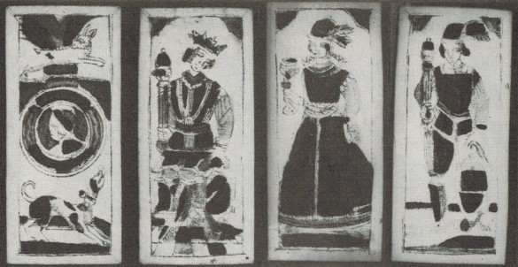

A Sociology of Tarot
Mike Soteric
Abstract: This article attempts to establish a sociology of the occult in general, and a sociology of the Western tarot in particular. The tarot is a deck of 78 cards invented in Italy in the fifteenth century. From humble beginnings as a device
forgaming or gambling, the tarot became invested with occult, mystical, divine, spiritual, and even psychological significance. This investing became part of a larger strategy of discipline and indoctrination to ease the transition from
pre-industrial structures of power and authority to industrial and bureaucratic struc- tures. That tarot, associated as it was with the emergence of elite Freemasonry, helped provide new ideologies of power and ways of existing within new
tightly structured, bureaucratic organizations.
Keywords: Tarot, freemasonry, discipline and control, ideology, occult, religion, halo/sharp.
Introduction:
Academics have long displayed an interest in psychical research, para- psychology, occult practices, and other phenomenon at the bound-
& Pinch 1982; Truzzi 1974a, 1974b; Zaretsky aries of science (Collins& Leone 1974; Robbins & Anthony 1979). This multidisciplinary inter- est is traceable even to the founders of specific disciplines, although we might be surprised to find that thinkers like Freud (Devereux
1953), San- dor Ferenczi (Gyimesi 2012), William James (Sech, de Freitas Araujo& Moreira-Almedia, 2013) and other disciplinary luminaries took ser-
iously the investigation of ‘boundary phenomenon.’ Sociologists have also expressed some interest in boundary phenomenon, the occult, se- cret societies, and such, but it has been far from all consuming. Simmel (2006) attempted to
establish a sociology of secret societies and Tiryak- ian (1972) attempts to move us ‘toward a sociology of esoteric culture.’ Some work has been done in the Sociology of Science (Collins & Pinch 1982), and Hess (2007) has examined spiritism in
some detail,but by and large sociologists have been silent, both empirically and theoretic- ally, on issues of the occult.
This lack of sociological interest and almost dismissive orientation can perhaps be traced to the dominant assumption that secularization and scientific rationality would eventually kill such practices outright (Lund- skow 2008). It could also be
partly due to their disenchantment with natural forces (Stone 2006), partly to the Durkhemian view of religion as a basic expression of the underlying social order (Durkheim 1915), partly to an anti-occult narrative that dismisses such
interest as ‘heresy’ or ‘superstition’ (Hanegraaff 2005; Versluis 2007), and partly to Marx- ian skepticism of religion and spirituality. As a result, sociology has paid little research attention to boundary subjects like, for example, the
tarot. The tarot is a deck of cards used for occult and mystical practice with a history of socio-political intrigue dating back to the fifteenth century (Dummett 1980), but which hardly registers on the sociological radar at all. There is some
interest in a scholarly study of tarot outside of sociol- ogy, but even there the ‘paucity of material’ requires a multidisciplinary approach (Farley 2009, 5) Farley (2009, 1) attributes the lack of interest in the tarot to its association with
“shoddy soothsayers and confidence tricksters,” and that is certainly part of it. Whatever the reason, the lack of sociological interest in the tarot represents a significant theoretical and empirical lacuna because, as this paper will attempt
to demonstrate, there are reasons to believe that the tarot has far more sociological significance than first attributed to it. In this paper we see that the Western tarot be- came a weapon used in an esoteric (i.e., secret) class war by
ruling elites to regain the power they lost as Church authority, and elite authority in general, were dismantled during the eighteenth and nineteenth centuries as a result of the English, French, and scientific revolutions.
What is Tarot?
The characteristics of a tarot deck are peculiar. A tarot deck is a set of cards in two parts (Dummett 1980) — a set of fifty-six minor cards, minor arcana, or suit cards, and a set of 22 additional ‘major’ cards. In the ‘minor’ part
of the deck there are four suits (Swords, Batons, Cups, and Coins), each of which contains the cards ace through ten as well as a King, Queen, Knight, and Jack. The major cards contain a Fool card, traditionally labeled 0, and twenty-one other
major arcana or trump cards, numbered from I to XXI.
Historically, the trump cards were:
I |
The Mountebank |
VIII |
Justice |
XV |
The Devil |
|---|---|---|---|---|---|
II |
The Popess |
IX |
The Hermit |
XVI |
The Tower |
III |
The Empress |
X |
The Wheel of Fortune |
XVII |
The Star |
IV |
The Emperor |
XI |
Fortitude |
XVIII |
The Moon |
V |
The Pope |
XII |
The Hanged Man |
XIX |
The Sun |
VI |
Love |
XIII |
Death |
XX |
Judgement |
VII |
The Chariot |
XIV |
Temperance |
XXI |
The World |
According to Dummet (1980, 7), it is the presence of the twenty-two ‘triumphs’ that always “distinguishes the tarot pack from every other kind of playing-card pack.” In a tarot deck, the minor arcana may or may not be painted with images; however, the major arcana are almost always illustrated with fanciful, mythological, spiritual, and cultural imagery.
Divination
When the Tarot first came into existence the deck was little more than a picture book, a system for gaming, possibly a device for gambling (Dummett 1980) and held no mystical, magical, or divinatory signifi- cance (Farley 2009). The tarot did,
arguably, have allegorical signifi- cance and Farley (2009) provides a convincing argument that the tarot, originating within the cultural milieu of the Egyptian Mamlūk caste, was reinvented as an allegory for the life of the Viscontis, rulers of
Milan, but beyond that there is no evidence (despite protestations of authors like Place (2005) who erroneously assert the tarot’s mystical credentials based on its association with the mystical secular art of the Renaissance), to suggest it was
anything other than a simple game of cards. According to Farley (2009, 3), “It began its life as a game with no purpose beyond providing mental stimulation. It contained no esoteric wisdom, could provide no spiritual advice and gave no clue as to
how to conduct one’s life.” These days, however, the tarot has become much more. At its most sinister, the tarot is an indicator of, and perhaps gateway to, satanic worship (Rudin 1990).
Some traditional Christians, in particular those of an evangelical bent, have a powerful belief that the tarot is a book of the devil. This belief is so powerful that even to mention the word ‘tarot’ causes a vis- ceral, fear-based reaction (Anon
2012).
However, the tarot is not primar- ily seen in this way. Much more common is a belief that the tarot was designed for, and can be used as, a tool for cartomancy. In the early days of tarot mysticism it was thought that the tarot could provide
a gate- way or a channel that would facilitate communion with jinn, angels, and other exalted heavenly hosts. More recently, the superstition has been tempered, but the belief in gateways and channels remains, and in some surprising places. These
days, the most respectable way to present the art of divination would be as an attempt to explain the world where science seems unable to work (Maitre & Becker 1966), as a tool for developing the ‘inner eye’ (Noddings & Shore 1984), or perhaps a
way to tap into the knowledge contained in the unconscious (Bala 2008). The tarot also holds a respected place in Jungian psychology as a way to connect with “that level of nature that lies behind stars and cards and psyche and is expressed in all
of them” (Spiegelman 1998, 93). For Spiegelman “that level of nature” is the level of ‘archetypes.’ According to Spiegelman ‘archetypes’ represent grand cosmic templates and patterns all of which can, when suitably connected with, yield prescient
and prophetic con- tent.However, as noted above, while the twenty-two trump cards that dis- tinguish a tarot deck from a ‘normal’ pack may have been developed with allegory in mind (Farley 2009; Pratesi 1989), there are no estab- lished references
to the use of the tarot as a fortune-telling tool until the middle of the eighteenth century (Dummett 1980). The first association of the tarot with mystical or divinatory proclivities emerge specifically with the work of Antoine Court de Gébelin,
M[onsieur] le C[omte] de M. and Etteilla (whose real name was Jean-Baptiste Alliette). Both can be traced to the publication, in 1781, of Court de Gébelin’s nine-volume Le Monde primitif, more precisely, to two seminal essays, one by Court de
Gébelin, and the other by M. le C. de M. (Dummett 1980). Prior to this publication, the tarot was seen as nothing more than a vehicle for a game of cards, and an outlet for the vice of gambling. Afterward, however, the tarot gradually became a
divinatory masterpiece and key to all life’s mysteries. Before we address the question of why the tarot changed, and what is significant about the dates, it will be worthwhile to highlight just what the tarot has become since Court de Gébelin first
set the ball rolling
A hermetic mystery
It is surprising enough that the tarot, a mere pack of cards with pretty pictures, would become a significant tool in the repository of the Jungian therapist, but even more surprising is the spiritual import that has been placed on this
not-really-so-ancient pack of cards. For many, the tarot has become a hermetic or spiritual tool. ‘Hermetic,’ in this instance, is to be understood both as “a tool of occult science and magic,” and as “hav- ing a lineage traceable to Hermes
Trismegistus.” Thrice-great Hermes was the mythological author of a corpus of works teaching Hermeti- cism, a belief that the world can be influenced through contact with and exploitation of ‘heavenly forces’ — magic in other words. In this view,
the tarot is a book of ‘special’ symbols, a “perfectly simple philosophical machine” that contains “the whole science” and “that astonishes by the depth of its results” (Levi 2002, 85). According to this line of thought, the tarot is not an ‘open’
book; rather, it is a secret book, a hidden book, one open only to those who undergo a “special training of the mind” (Ouspensky 1976, 2). With the tarot, it becomes possible to mediate be- tween humanity and the Godhead, between
god/spirit/consciousness and
profane human existence (Semetsky 2011a). In the Hermetic tradition, tarot is variously a teaching tool used to develop special skills, a “com- plete code of Hermetic symbolism” (Ouspensky 1976, 2), a “summary of Hermetic Sciences” (Ouspensky 1976,
6), and a way of revealing the “interface between human kind and the cosmos” (Jorgensen & Jorgensen 1982, 381).
Occult reality, then, is “idealistic” or spirit like in fundamental character. The material world (that world available to sensory experience) is held to be an illusion; matter, in other words, is dominated by spirit. The tarot symbolically
represents material phenomena (heavenly bodies, political, family, economic relations) in terms of nonmaterial principles and forces thought to constitute the True nature of the universe. Though hidden and concealed, these supernatural forces are
accessible to human beings by way of intuitive, mystical, or psychic insights. (Jorgensson & Jorgensen 1982, 380)
As Jayanti (2004, ix) notes:
"... the images in the true1 tarot are liberating in their effects they present the reality behind appearance which is the search of all aspirants... The tarot is the easiest gateway to the Great Mys- teries of Life.” In sum, in the magical mystery traditions of the Western world, the tarot is an esoteric tool of mysticism, a supreme instrument of divination, a deck of secret knowledge, an ancient Egyptian fountain of wisdom, a bible of bibles, a bible of humanity containing wisdom from the time the world was born, a book of Thoth, a book of Adam, a revelation of ancient civilizations, and the whole cosmic/cosmological/ theological and philosophical ball of wax rolled up into one convenient package of cheaply illustrated paper cards (see Dummett 1980; 2007)."
magical Semiotic Revelation
We will return to analysis of ‘hermetic mysteries’ of tarot shortly. It is worth noting that out of the view that tarot is some magical, spiritual tool have arisen other schools of thought. Noteworthy is the Jungian school of psychology where you will find the same hyperbolic discourse on the powerful tarot. Here the tarot is a tool for praxis therapy, a thing to facili- tate the process of ‘individuation’ (Gad 1994), an instrument capable of “heal[ing the] human psyche and lift[ing the] human spirit” (Semetsky 2010b, 59), and offering transformation and transcendence (Bala 2010). Its efficacy is established by linking it to psychological theories of ‘ab- jection’ and archetypal psychology (Semetsky 2000). We can use indi- vidual archetypes to facilitate self-journey and awareness, reading deep archetypal significance from them (Nichols 1974). In certain branches of psychology, the tarot is even more than mere individuation. Its utility is extended into the world of semiotics and child psychology (Jayanti 2004). Some see tarot as a tool to teach children the “three I’s” of “in- formal education”: intuition, insight, imagination (Semetsky 2011a), or even as a powerful therapeutic tool, a reflection of the four gateways of childhood, bursting with deep psychological meaning, a divine reflec- tions of deep psychology so powerful that it might help heal the inner child and rework toxic socialization. As Jayanti (2004, 8) notes: To conclude, [because] so many of us were brought up in dysfunctional families...a great need to re-habituate or re-parent...ourselves has arisen. Many types of work geared to reclaim and heal the Inner Child have be- come available to answer this need. The ancient Qabalistic tarot and Tree of Life have offered the tools with which to do this type of transforma- tional work. According to Semetsky (2011a, 252) “The tarot images that are laid down in a particular pattern are thereby ‘selected’ by soul, by the uncon- scious, and cannot be considered random.” In this way, the tarot becomes a kind of mystical Rorschach, allowing an individual or therapist access to deep levels of meaning in the collective memory pool for the purpos- es of spiritual work, meaning, and mythological revelation (Semetsky 2009; 2011b). “When symbolically represented in Tarot images, the tran- scendental realm of the psyche is being brought, so to speak, down to earth by virtue of its embodiment in physical reality.” (Semetsky 2010a, 110, emphasis in the original). In line with this line of thinking Nichol- son (2003) uses the tarot to illustrate deep wisdom of feminist theology, and Santarcangeli (1979, 33) informs us of the deep cosmic ‘wisdom’ of the fool. If you believe the psychologists, pregnant with meaning, the tarot is a teacher of lessons and a font of cosmic/genetic/racial wisdom and memory.
Unraveling the mystery
The first clues to unraveling the ‘mystery’ come from the temporal loca- tion of its emergence as a divinatory tool, specifically, during the French Revolution. At that time, traditional power structures were crumbling and New World industrial
capitalism was emerging. The popular mind sees this period as one of general emancipation, but as any sociologist will know, the history of the French, English and Dutch revolutions and the emergence of industrial capitalism is not the history of
the end of class oppression. Instead, it is the history of the replacement (more or less) of one ruling class with another. During the transition, feudal re- lations of power, feudal ideological institutions, and feudal systems of control were
replaced with industrial ones.
The story of this transformation is understood, at least in general terms, as a disciplinary revolution. Between the eighteenth century and middle of the nineteenth, Western institutions changed dramatically (Kieser 1998) and new forms of behavior
were required if industrial capitalism was to survive and thrive (Weber 2003). It essentially came down to the creation of new kinds of authority, and new power relations, as economic, productive, and social crises brought the old feudal order to
its knees (Dobb 1972). It is, in short, about the creation of modern corporate/ bureaucratic control structures, fitting workers and middle management with the executive branches, and creating the well-oiled capitalist machine we have today
(Barnard 1968). In the context of the disintegration of traditional organizations and traditional authority struc- tures, the issue was one of authority, command, control, and legitimacy (Weber 2003), especially in emerging industrial production.
Modern corporations and bureaucracies have top-down executive control and established disciplinary procedures, but these things would have been absent at the cusp of the revolution. At that time, there would have been an obvious need to create new organizational structures and civilizing influences (Elias 1994), and of course, that is what happened. It is a com- mon story in sociology with
the rise of the Protestant ethic (Weber 1987; 2003) and the dispersion of ‘institutional strategies’ for maintaining col- lective discipline throughout Europe (Gorski 1993, 266).
In the context of ‘institutional strategies’ for maintaining collective discipline, Freemasonry and other middle-class “men’s huts” [2] (Jewkes, 2005, 47)3 can been analyzed sociologically. According to Jewkes (2005), freemasonry is part of a male
bonding ritual, characterized by hierarchies and exclusions, and that reproduces and reaffirms patriarchy, unequal power relations, and ‘male’ hegemony. Jewkes’ comments are relevant here, not so much for the Masonic performance of patriarchy, but
for the way the Masonic universe reinforces and, more importantly, re-creates power relations, not in a feudal way, but in a bourgeois one.
When they were first introduced, Masonic lodges were safe places to explore, proselytize, and convert people to the new social order. “It was in the lodges and through them that the bourgeoisie acquired a so- cial form of its own. In imitating both
its mystery won a place beside the ecclesiastical mysteries and the arcane politics of States” (Koselleck 1988, 72, quoted in Horn 2011, 111). According to Kieser (1998, 47), Freemasonry was part of the shift in control and disciplinary strategies
from feudal organizations, such as guilds, which “encompassed” mem- bers “in total”) and organizations that required less complete forms of immersion (i.e. pre-modern bureaucracies). In this context, Freemasonry was an ideological and pedagogical
control strategy, helping to facilitate not only required changes in behaviour, but also the development and acceptance of modern command and control structures. As Kieser notes:
The shift from estates to organizations necessitated enormous changes in the individual’s behaviour. Today, organizational behaviour has become so common that we are no longer aware of the amount of learning about new behaviour that members of the early organizations had to manage.For example, in organizations, they had to accept a person as a superior for the simple reason that this person was appointed as a superior. The su- perior could be younger, less educated, of a lower social status, less skilled — none of this mattered; as a subordinate, one had to accept his or her orders. On the upper levels of an organization, the member also had to be able to make decisions according to the rules sine ira et studio (without ire and passion), even if, as an individual, he or she would have decided dif- ferently. In general, as a member of an organization, one has to do things for an organization according to plans, procedures, or orders that, as an individual, one would tend to reject. In the 18th century, very few people were able to exhibit a behaviour that was appropriate for organizations and even fewer were capable of designing organizations. (1998, 47)
In the context of the disciplinary revolution, Gorski (1993) notes two important features of the new organizations: an ethic of social discipline and surveillance. Members of modern organizations enter into a disci- plinary community with all the
standard features of modern control, in- cluding enclosure, partitioning, ranking, organizational rules, etc. (see, for example, Foucault 1975). Furthermore, the ethic of social discipline requires mutual (later technological) surveillance.
Freemasonry was very popular in the late seventeenth and early eighteenth centuries, a time when feudal methods of control and discipline were dissipating and new forms were required. Freemasonry provided discourses of authority, a disciplinary
ethic, an d provisions for mutual surveillance and social discipline, all rooted in and inspired by Calvinism and ascetic Protest- ant ethics (Gorski 1993). Kieser (1998) provides a revealing translation of several masonic speeches of the era.
Freemasons saw themselves as ‘impressive men,’ conscious of their role in the formation of new social orders, and actively involved in steering its emergence. Freemasons had a moral duty for mutual education in temperance, politeness, prudence,
perseverance, and other characteristics suitable to a new and emerging bourgeois society. Freemasons were admonished to be active, to have a strong work ethic, and to engage themselves in useful labour, all very valuable advice for anyone seeking
entrance into the power centres of the emerging middle classes.
Lodges were thus organizations that enabled their members to de- velop precisely those skills they would need as capitalism developed. Lodges constructed the first hierarchies [3] divorced from feudal tradition basing advancement not on ‘the dignity of birth,’ but on the acquisition of key organizational and moral skills, such as self-discipline, reliability, loyalty, and subservience to the command chain, and this was true even for nobles (Manheim 1979,
cited in Kieser 1988). Nobles entered lodges as well, and they did so as a way to transition themselves from old power re- lationships into new ones. Lodges offered a way for old layers of nobility to mingle with emerging industrial elites (Kieser
1988). Similarly, Free- masonry offered the upper bourgeoisie fulfillment of its need for prestige and recognition. In this way, secret societies, as they initially emerged, helped to bridge the social gap (Kieser 1988). Perhaps most importantly,
Freemasonry facilitated the development of a morality that would facili- tate business relationships (Schindler 1982, cited in Kieser 1988). In this regard, Freemasonry can be considered a brilliant and self-conscious strat- egy for lubricating the
transition from and old to a new world order — it helped create new modes of discipline and authority, and new power struc- tures, all the while co-opting potential resistance (by incorporating feudal authority) and obscuring the intent and outcome
of its operations.
The ideological, political, and social functions of the Freemasons (and other secret groups) have long been established.[4] The question now becomes, “What does all this have to do with the tarot?” The answer is, “Everything.” From almost the
beginning, the tarot has been an essential part of ideological indoctrination in secret brotherhoods, and a tool useful for facilitating the mutual education of the emerging social elites. Indeed, new speculative lodges were barely open a day
before tarot became in- corporated. The moment of creation of the ‘occult tarot,’ and the principle author responsible, are highly revealing indicators. As Dummett notes:
The entire occultist tarot tradition stems from the work of Antoine Court de Gébelin (1719 - 1784),
Court de Gébelin initiated the idea of the occult tarot. Following him, the idea of ‘the tarot as occult masterpiece’ was extended by Freemasons, clerics, and other members of the emerging elite (Dummett 1980). The ideological imposition reached a sort of culmination with the work of prominent Freemason, A.E.Waite in the early twentieth century, but even down to this day tarot decks are regularly linked to secret societies.6 For example, authors such as Jayanti (2004, v) reference well-known Free- masons like Paul Foster Case as teachers. And lest one doubt the inser- tion of tarot into ideologies of hierarchy and control, Jayanti unselfcon- sciously discusses major modern decks as derived from elite organiza- tions participating in the ‘spiritual hierarchies’ (read ‘elite hierarchies’) of this world:
The true tarot decks that have been published by authentic Mystery Schools, such as the Order of the Golden Dawn of England with the Rider deck, and the Builders of the Adytum of the US with the Case deck, are true in that they most closely approximate the unpublished tarot of the In- ner School, the Spiritual Hierarchy of the world (Jayanti, 2004: ix).
The question now becomes, why choose tarot for this purpose and why incorporate it as a tool of indoctrination when it was merely a card game at the time? The answer, although lost in the mists of time, likely revolves around (a) the allegorical meaning of the images, a meaning linked to the Italian courts of the fifteenth century, (b) their suitability as an imaginative device capable of absorbing additional meaning, and (c) their suitability for ideologically impregnated drama. As Dummett (1980) notes, the original tarot decks were painted for members of the royal elite. As Farley (2009) discovered, the images themselves were representative of the life and times of important noble families. Thus the images incorporated themes that any sociologist would recognize as representing elite life, elite priorities, elite ideology, and elite spiritu- ality.7 There is a Court Fool, for example, and a Court Juggler. The au- thority of the state and church are clearly represented in the Empress, Emperor, and Pope cards. There’s a Chariot carrying the king, a Hermit (a monk perhaps), an angel of Temperance, and the Justice of the royal courts. Death, a common fact of life, is represented, as is Love (and mar- riage). Even the Christian last Judgement, a cautionary tale if there ever was one, is there.
Figure One: The Emperor and Hierophant (Pope) from the Rider-Waite Deck

The presence of elite ideology and practice in the already existing tarot deck would likely have been attractive to the Protestant clerics and Free- masons who co-opted the deck. After all, they were demonstrably mem- bers of the elite already. More attractive perhaps would have been the opportunity to read in additional meaning. Images are worth a thousand words we are told, but what words those might be are often a matter of imagination and interpretation. As recognized by some Jungian psych- ologists (see, for example, Rosengarten 2000), tarot images (like any good images) are artistic devices that can carry significant additional meaning. It took only a few years before the originators of the occult tarot had impressed dogma, magic, and mysticism from the Western esoteric traditions upon the tarot.[5] Soon tarot cards conveyed cabbalis- tic, astrological, alchemical, and gnostic import (Decker and Dummett 2002). The allegorical bed of the tarot provided a fertile ground within which to plant the seeds of a new, post-feudal ideology
the ideology
For five centuries or more tarot cards have been used in Europe, ostensibly for games and fortune-telling, but really to preserve the essentials of a se- cret doctrine. They form a symbolic alphabet of the ancient wisdom, and to their influence upon the minds of a few enlightened thinkers we may trace the modern revival of interest in that wisdom. (Case 2012, 5)
The question remains, “What exactly is the ideology embedded in the tarot?” We might think that uncovering this ideology would be a ma- jor challenge, especially since Western esoteric traditions are, by and large, secret traditions, but it is not that hard, for several reasons. For one thing, and as contradictory as it might seem, modern esoteric traditions are by and large written traditions (Versluis 2007). Ideology is imprinted in words and images, and it is often very easy, if one has the right per- spective (the “eyes to see” as they say), or can make a simple intellec- tual connection, to read the ideology directly from the image or text. Consider the Wheel of Fortune card, which is typically said to indicate the ‘kingdom’ or, more directly, the world around us. It is an image of reality, often with karma invoked. It is the expression of spirit, a work- ing out of the true law of the universe, a perfect representation of divine providence, or as Paul Foster Case says, a representation of “spirit in self-expression”
The tenth trump, the Wheel of Fortune, is Malkuth, the Kingdom. As the parables of Jesus plainly show, that Kingdom is not a state of life after death; nor is it, except in a very limited sense, a social order. It is the method of Spirit in self-expression; and because cyclicity is characteristic of that method, the tarot symbolizes the Perfect Law as Buddha did, by a Wheel. (Case 2012, 32)
It is quite interesting that Case drops the word ‘social order’ into his description of the meaning of this card. What a social order, however limited, has to do with the self-expression of Spirit is unclear, but it is apparently related. Case of course doesn’t bring out the nature of the social order in his text. This is a “secret” tradition after all where the inner truths of the hearts of men are drawn out in the hidden spaces of the temple alcove. The meaning of the card, and the nature of the “social order,” is available however in the visual imagery of the card with clar- ity, precision, and dramatic oomph. Consider the Golden Dawn image below.
Figure Two: The Golden Dawn World Card
The social order that Case is referring to is quite plain to see in the card above. Nature below, the gods above, and the wheel of life’s cycles of (birth and rebirth) in between. This is an elite social order and this elite social order is embedded in Western esoteric traditions all the way back to Plato, as Versluis notes of his Republic, “The Republic also res- onates with the recurrent idea of creating a spiritual utopia governed by an enlightened elite, a
concept found much later, for example, in the Rosicrucian movement of the seventeenth century” (Versluis 2007, 16). Looking at the card it is hard not to see the enlightened spiritual elite governing the unenlightened and primitive masses. The
ideology or ‘message’ embedded in the card is something that should be familiar to any second year sociology student: the card represents a two-class social system, and a not very pretty one at that. The upper class is royal and regal, while the
lower class is unevolved, ape-like, and clearly pas- sive. The Golden Dawn card is remarkable not only for the ‘hide in plain sight’ way that elite ideology is presented, but also for the remarkable way the ideology is accepted as part of a package
of divine revelation, of spirit expressing itself in the Kingdom. Elites are justified to rule because they have access to the ‘light,’ they are ‘evolved,’ and so on. The rhet- orical turn (reinforced by a visual turn, crucial in pre-literate
societies) represented here should be apparent, and a visceral reaction may even accompany our realization that the divine, magical, Egyptian, Vedic wis- dom represented in this card is nothing more than a prettied up version of Catholic doctrine
concerning the divine right of kings. Social class, hierarchy, command, control, privilege, and the unequal distribution of power, so typical of the ‘class struggle’ of this world (Marx 1848), is written large on this card.
Another reason that is it not hard to ‘read’ the ideology of tarot is because, at the beginning of the twentieth century, the ‘secrets’ of eso- teric elitism were fully exposed to the mass consciousness (Decker and Dummett 2002) and subsequently
penetrated into, and become a part of, the ideological fabric of this planet. Members of the men’s huts of the time, most notably Crowley and other members the fraternal organiza- tion he founded, made it a point to expose the ‘secret teachings’ to
the outside world. A scandal at the time, Crowley irked members of Her- metic Order of Golden Dawn when he self-consciously set himself, and other members of his very own secret club, as the revealers of all the secrets. Crowley created the journal
The Equinox, and then subsequently published Golden Dawn secrets and rituals in his open esoteric journal.[6] He sets the agenda in the opening editorial of the publication, though not without first casting standard aspersions on the ‘multitudes’
(i.e., lower classes) of the world.[7]
With the publication of this Review begins a completely new adventure in the history of mankind. Whatever knowledge may previously have been imputed to men, it has always been fenced in with conditions and restric- tions. The time has come to speak plainly, and so far as may be in the language of the multitude...But the Brothers of the A ∴ A ∴ make no mystery; They [sic] give you not only the Text, but the Comment; not only the Comment, but the Diction- ary, the Grammar, and the Alphabet. (Crowley 1909, 1)
Discussion
The intent of this paper is not to expose in detail the underlying ideology of the tarot major arcana, that is the task of a subsequent paper entitled The Ideology of Tarot (Sosteric, in progress), but rather to demonstrate that such work is both
needed and possible. In other words, this article has tried to establish the need for a sociology of the Western tarot spe- cifically, and a sociology of the occult more generally. This Sociology of Tarot includes a sociology of how those who
practiced tarot used the decks in ways that related to changing relations of class, discipline, power, and ideology. It appears that tarot was invented as a deck of play- ing cards, reflecting the life and times of significant Italian families, but
became implicated in the double revolutions that collapsed structures of feudal authority, and legitimated new systems of social authority and discipline. The tarot deck was a useful tool for this purpose because the imagery was already linked to
elite practice (having been invented in the courts of Italy), already had suitable iconography (kings, queens, and popes), was plastic and could be ‘imprinted’ with additional symbolism, and eventually became used as an initiatory device in secret
societies and new religious sects emerging at this time. Work to establish the oc- cult authority of the deck was accomplished by prominent Freemasons, clerics, and members of the transitioning elite. The net result was a deck of superb ideological
brilliance and utility, capable not only of indoc- trinating members of secret organizations, but also of imprinting mass consciousness with elite ideology.
Although one might initially feel that a sociology of the tarot would only be of historical interest, that is not the case. The movement of tarot ideology into the mass consciousness, as encouraged by Crowley and his brothers for example, has left
an unchallenged (and potentially quite significant) ideological imprint. Coupled with the recent proliferation of superstition, ignorance, and irrationalities of modern society as noted by Bauer (2011), and the uncritical way tarot aficionados
(even academic ones) take up the ideology (e.g. Place 2005), the social impact of tarot in contemporary society may be taken too lightly. Doering-Manteufell (2011) found a dramatic spread of superstitions that uses modern com- munication
technologies as a means to proliferate occult (read ideologic- al) practice. This is particularly evidenced in the proliferation of tarot decks. Today literally hundreds of tarot decks are in print, all representing
the author’s particular views, but almost all of them echoing iconic Ma- sonic imagery and interpretation (Farley 2009). More than ever, socio- logical analysis in the occult tarot specifically, or occult phenomenon more generally, seems warranted.
Sociological investigation would include analysis of ideology and control that might explore links between the tarot and the ideological im- portance of religion (Weber 2003), or disciplinary control strategies iden- tified by Foucault (1975) and
others. There are also dialogic questions about the rhetorical strategies used not only to obscure the true nature of elite ideology embedded in the tarot system, but also to lend occult and spiritual authority to the tarot (Fairclough 2001). These
strategies have only been touched on in this paper, but other strategies are evident and need to be exposed.[8] Finally, the psychology of the tarot, specifically its use in dramatic ritual and initiation pageantry, and its utility as a device of
indoctrination, are also interesting questions worthy of sociological examination.
It is also useful to note that the history of tarot and the occult are not just class histories, they are histories of patriarchy and racism. As noted earlier, sexism is imprinted on the very structure of men’s huts, and for all the mystical wisdom
offered up, the sexism is prominent and often of- fensive, especially in dominant figures like Aleister Crowley [see for ex- ample the opening words of the Crowley editorial in the inaugural edition of Equinox (Crowley 1912)]. Racism also figures
in the principal texts of theosophical movement [see Blavatsky 1888; Besant 1907 and 1911), and Besant & Leadbeater (1913)] where doctrines of spiritual progress, reincarnation, and karma are based on racial frameworks and derogatory
characterizations of “non-Aryan” racial groups (Staudenmaier 2009, 52). Even contemporary Masons exclude women from consecrations of their lodges. In this context, it is important to point out that in the Masonic tarot, the Fool (the tarot
‘signature’ card representing the subject of the initiatory/evolutionary journey) is inevitably white, male, and young.
Berger (1969) assumed that Western societies would experience decline of spiritual and religious belief, and increased secularization.
This paper defends the need for a new sociology of tarot, occult, and ideology, and an open discussion of the significance and relevance of occult knowledge and practices. Note, however, that it is more than just social class, gender, ethnic, or
ideological interest that is at stake here. There is a sociological question raised by all this: “Why do spiritual- ity, religion, and the occult continue to hold such traction?” The implicit and probably unspoken (except at closed faculty parties)
assumption of those who follow Berger probably invokes stupidity, incredulity, and ir- rationality, but this is hardly an explanation at all. People are not stupid and they do not, in general, believe things for no reason (Sosteric, Under Review).
Better causes need to be established. Elites seem to believe in the tarot because it has been constructed by their members to reflect (and help distribute) an ideology supportive of hierarchy, privilege, and control.
Still others, like psychologists, have been critical of spiritual be- liefs since Freud’s (2012) dismissal of religion as an infantile delusion, yet some adopt the tarot as a fountain of mystical/archetypal wisdom in pretty much the same way as
established by occult elites. There is also a very long history of very smart people being interested in religion, spirituality, and mystical phenomenon (Verselius 2007). William James, father of American psychology, took religion and mystical
experience seriously not as an example of something else (e.g. as a class opiate, or as providing social solidarity, or as a sacred canopy, or as a stepping stone from our superstitious past into our rational future), but as some- thing worthy of
direct and engaged investigation (James 1982). Are these people stupid, irrational, and reactionary as well? Or, moving out of the realm of scholarly inquiry, why does the tarot remain so popular, or why do occult beliefs in general enjoy ongoing
popularity. Can it all be dis- missed as naivety or elite ideology, or is there something else going on with tarot and religion not yet identified by sociologists?
Hints may be offered here. In my sociology of religion class, for ex- ample, I explore the opportunistic nature of religion and spiritual beliefs.
It turns out that when one examines the history of religion from a trans- disciplinary perspective (Lundskow 2008), religious and spiritual beliefs are, as I argue in the course, opportunistic. That is, it is not just tarot that becomes a virtual
Rorschach suitable for ideological impregnation by whatever ‘special interest’ group happens to come along; rather, spiritu- ality and religion in general represent themselves as suitable for the pro- jection of a political, economic, and other
special interests. Religion and spirituality come to express — always and wherever they are found — the social order, environmental realities, and even economic exigencies of a particular society at a particular time. Note however, that elites do
not have unilateral control over the consciousness of the masses. Because religion is a resource, spirituality is a (arguably poorly) contested realm. It is the case that progressive or reactionary economic, political, and even gender interests may
be inscribed into religious texts.
Finally, a third reason for continued belief in the occult, spiritual, mystical, esoteric, mystery traditions may be because they represent real experiences, real revelation, and real gnosis that undermine normal taken-for-granted reality of our
regular 3D world (Lynch 1977; Sosteric Under Review). This suggestion may strike readers as scientific heresy, as indeed it is. But the alternative is to dismiss the collective experiences of billions of people throughout history who have believed
in mystical realms beyond the mundane, but also the individual experiences of schol- ars who have had some powerful mystical experiences (e.g. Castaneda 1985). I find myself in this group of scholars whose interests were per- haps not initially
scholarly, but mystical, and whose mystical experiences “broke open the head” (Pinchbeck 2003) and led them to question the materialist foundation of science. Such experiences are of deep scholarly interest (Forman 1999), and fit very well into the
gnostic experiences reported by Western mystics down the ages (Versluis 2002).
Just as many other scholars use experience to develop scholarly insight, my experiences with tarot, mysticism, and gnostic traditions, have lead me to new sociological understandings. This raises scholarly questions, none of which can be served by
out-of-hand, anti-scholarly dismissal. Western mystery schools, occult traditions, even established exoteric institutions like the Roman Catholic Church, all justify their positions, their tools, their bibles, their tarot books, by ascribing them
to real mystical, magical, experiences. Christian are told to believe in the bible because it is the word of God, expressed through the mystical rev- elation of the prophets. Buddhists follow Buddhists tracts because they represent the mystical
revelation of Buddha. Freemasons and Protestant clerics offer the tarot as the “bible of bibles” and support its authority in the same way, with claims for its antiquity, and linkages to the mystical experiences of authoritative personages (e.g.
Hermes Trismegistus, the Egyptian god Thoth, etc.). This is nothing new. James (1982) said that all religions derive from somebody’s mystical experiences. The point in this paper is simply that gnostic traditions, the words of the mystics, occult
‘wisdom’ traditions, ‘mystical tools’ like the tarot, deserve serious and critical inquiry and analysis as such, and there is good reason to apply sociological analysis here. People who have mystical experiences often impress upon them their social
class, gender, ethnic, political, and eco- nomic biases. Nowhere do we find ‘pure’ gnostic truth. Everywhere we find opportunistic imprints on spiritual ‘revelation.’ The problem is, if we dismiss spirituality and religion as nothing more than
ideology, as salve against existential crises, or as infantile fantasy, not only do we miss an arguably valid area of inquiry (spirituality and gnosis), we also leave a spiritual vacuum, an absence of sociologically sophisticated understand- ing, that has profound global consequences. As Butler (2006) notes, the Christian Right has been able
to gain ascendency in global politics and culture precisely because the Left has abdicated responsibility for providing such meaning. We sociologists have seen the Wizard of Oz, recognized him as a charlatan, and walked away. We have posted signs
on the wall saying caveat emptor, but nobody seems to be reading the signs. Why do people continue to genuflect before the Wizard? There is a powerful need operating, and somebody always seems willing to fill it. The problem is that the people who
move in, often do so without the best intentions (they have political, economic, gender and racial agendas), or without a sufficient degree of sociological, psychological, physical, chemical, even historical sophistication. The result is active
imposition of ideology in the first case, or naïve adoption and unwitting propagation of ideology in the second. I would suggest a grass roots, sociologically sophisticated, spirituality, needs to be offered.
Acknowledgements
The author would like to thank Dr. Mike Gismondi and the anonymous reviewers for their helpful comments on earlier drafts of this article.
Notes
1. Not the “fake” Tarot, but the “true” tarot. Ever since the Freemasons took over tarot imagery there have been attempts to “manifest” the “true” tarot. Commentators like Crowley and Waite, and all those before, approach the tarot as if it is a
puzzle in need of solution, or a cosmic gestalt in need of expression. For all these people there is an underlying truth that needs reveal- ing. Thus each approach is an attempt to uncover the true meanings of the cards. Truth can be located in
mystical gnosis (as the Freemasons attempt to do) or archetypal revelation (as Jungian therapists to do), but either way there is an attempt to find the “true” tarot. Of course, the argument of this paper is essentially there is no “true” tarot.
There may be spiritual and gnostic truths to discover in this world, but these truths are not inherent in the tarot. The tarot is a human construction and thus the question is not whether we can discover the “true” tarot, but are we satisfied with
the thing that we have constructed. Personally I am not satisfied with the masonic Tarot and have been working to see something new, something more progressive, constructed in its place (see comments in the conclusion of this paper).
2. Men’s huts are “where those men who have earned the right to call themselves men, or are in the process of attaining this emblem of privilege, gather” (Remy 1990, 45, cited in Jewkes 2005, 47). Jewkes goes on to say “[m]en’s huts for the middle class are institutions such as golf clubs, gentlemen’s clubs, and Freemason lodges, while working class manifestations include pubs and betting shops” (2005, 47). Men’s huts exclude women and “uninitiated” men. The metaphor derives from the physical men’s huts found in many hunter-gatherer societies. Anthropologists have found that the greater the distance (physical or social) between the men’s hut and the rest of the village, the poorer the relative position of women within the society (see, for example, Spain, 1992).
3. Masonry has a “trigradal” system, entered apprentice, fellow craftsmen, and master (Knoop & Jones, 1947). This three tiered division, which emerged as Freemasonry passed from operative into speculative forms, reflect the Capitalist social classes, lower, middle, and upper, and also the worker, middle management, and executive branches of modern organizational bureaucracies.
4. Interestingly, the story of the Masonic men’s hut as tool of ideological indoctrination of the emerging elites fits well with the historical transformation that occurred in Freemasonry during the 18th century. Prior to about 1740 Freemasonry was nothing more nor less than a craft union, functioning to organize stone workers, protect their interests, and protect the craft (Knoop & Jones, 1947).In the 16th and 17th centuries however Freemasonry was transformed from “operational” to “accepted,” and finally to a “speculative” secret society. This transformation occurred as the doors of the organization where thrown open to individuals outside of the craft itself. It began when Freemasonry began to “accept” members as brothers despite the fact that they were not stone masons. Initially acceptance was based on an expressed interests in architecture or engineering (both loosely related to craft working) but later, as elite, nobles, merchants, and others were “accepted,” the pretense was dropped altogether. At a certain point, 1740 to be specific (Knoop & Jones, 1947), speculative Freemasonry, a Freemasonry based on the creation of legend, mystery, and “esoteric” secrets, was born..
5. As noted by Versluis (2007), these are Hermeticism, gnosticism, Jewish mysticism, and Christian gnosis.
6. All issues of the journal are available online at http://hermetic.com/crowley/equinox/ (retrieved April 3, 2013).
7. Let the secrets out? Why? Not to foment the collapse of class structure, but because the ideology had become refined enough to be exposed to the mass mind. With publication of A.E. Waite’s tarot deck in 1909, the Masonic ideology of the tarot has moved into the popular mass conscious, where it exerts ideological influence over the masses, just like any other religion or spirituality. Almost all modern tarot decks derived from Waite’s extremely popular deck (Farley, 2009). Indeed, it is hard to find a deck that does not have characteristic cards of the Waite deck, and therefore, Masonic influences.
8. For example, some authors will simply state truths as obvious, self-evident, and needing no authority, investigation, or elaboration. This questionable (and one would think academically transparent) rhetorical device is used, for example, by Place (2005, 75) who makes bald faced rhetorical claims about contested ideological frameworks without even attempting to back his statements up. For example, referencing the mystical vision of Levi, Place echoes elite ideology in the form of justifications of gender, and mystical cosmic dances between good and evil (Sosteric, unpublished), and asserts the veracity of said mystical truths as ‘sophisticated mystical vision’, self-evident, and requiring ‘no authority to verify its timeless truth.’
References
Anon. 2012. Private Telephone Conversation with GG, Evangelical Christian.
Bala, Michael. 2010: The Clown. Jung Journal: Culture & Psyche 4 (1): 50-71.
Barnard, Chester. 1968. The Functions of the Executive. Cambridge, MA: Harvard University Press.
Bauer, Martin W. 2011. Editorial. Public Understanding of Science 20 (3): 290-291.
Beeb, John. 2008. A tarot reading on the possibility of nuclear war. Psychological Perspectives: A Quarterly Journal of Jungian Thought 16 (1): 97-106.
Berger, Peter L. 1969. The Sacred Canopy. New York: Anchor Books.
Berger, Peter L. 1999. The Desecularization of the World: Resurgent Religion and World Politics. Grand Rapids MI: Eerdmans.
Besant, Annie. 1907. Study in Consciousness: A Contribution to the Science of Psychology. London: Theosophical Publishing House.
Besant, Annie. 1911. Man and his Bodies. London: Theosophical Publishing House.
Besant, Annie, & Leadbeater, Charles. 1913. Man: Whence, how and whither. London: Theosophical Publishing House.
Blavatsky, Helena. 1888. The Secret Doctrine. London: Theosophical Publishing House.
Butler, Jennifer. 2006. Born Again: The Christian Right globalized. London: Pluto Press.
Case, Paul Foster. 2013. An Introduction to the Study of the Tarot. Gauteng, SA: Ancient Wisdom Publications (originally published in 1920).
Castaneda, Carlos 1985. Teachings of Don Juan: A Yaqui Way of Knowledge. Washington: Washington Square Press.
Cicero, Chic, & Cicero, Sandra. 2012. The Essential Golden Dawn: An Introduction to High Magic. Minnesota: Llewellyn.
Coco, Angela, & Woodward, Ian. 2007. Discourses of authenticity within a pagan community: The emergence of the “fluffy bunny” sanction. Journal of Contemporary Ethnography 36 (5): 479-504.
Collins, H. M. & Pinch, T. J. 1982. Frames of Meaning: The Social Construction of Extraordinary Science. London: Routledge & Kegan Paul.
Crowley, Aleister. 1909. Editorial. Equinox 1 (1): 1-3. Retrieved April 4, 2013, from http://hermetic.com/crowley/equinox/equinox-Ii.pdf
Crowley, Aleister. 1912a. Editorial. Equinox 1 (8): xxiii-xxvi. Retrieved April 4, 2013, from http://hermetic.com/crowley/equinox/equinox-Iviii.pdf
Crowley, Aleister. 1912b. A brief abstract of the symbolic representation of the universe derived by Doctor John Dee through the skrying of Sir Edward Kelly. Equinox 1 (7): 229-243. Retrieved April 4, 2013, from http://hermetic.com/crowley/equinox/equinox-Ivii.pdf
Decker, Ronald, & Dummett, Michael. 2002. A History of the Occult Tarot, 1870-1970. London: Duckworth.
Decker, R., Depaulis, T., & Dummett, M. 1996. A Wicked Pack of Cards: The Origins of the Occult Tarot. New York: St Martin’s Press.
Devereux, G., ed. 1953. Psychoanalysis and the Occult. New York: International Universities Press.
Dobb, Maurice 1972. Studies in the Development of Capitalism. New York: Taylor & Francis.
Doering-Manteuffel, Sabine. 2011. Survival of occult practices and ideas in modern common sense. Public Understanding of Science 20 (3): 292-302.
Dummett, Michael. 1980. The Game of Tarot. London: Duckworth.
Dummett, Michael. 2007. Six XV-century tarot cards. Who painted them? Artibus et Historiae. 28 (56): 15-26.
Durkheim, Emile. 1915. The Elementary Forms of Religious Life: A Study in Religious Sociology. London: Allen & Unwin. Retrieved April 4, 2013, from http://archive.org/details/elementaryformso00durkrich
Elias, Norbert. 1994. The Civilizing Process: The History of Manners and State Formation and Civilization. Oxford: Blackwell.
Farley, H. 2009. A Cultural History of Tarot. London: I.B. Tauris
Fairclough, Norman 2001. Language and Power. Toronto: Pearson Education ESL.
Collins, H. M., & Pinch, T. J. 1982. Frames of Meaning: The Social Construction of Extraordinary Science. London: Routledge & Kegan Paul.
Forman, Robert. 1999. Mysticism, Mind, Consciousness. Albany: State University of New York Press.
Foucault, Michael. 1975. Discipline and Punish: The Birth of the Prison. New York: Vintage.
Freud, Sigmund. 2012. The Future of an Illusion. Buffalo: Broadview Press.
Gad, I. 1994. Tarot and Individuation: Correspondences with Cabala and Alchemy. York Beach, ME: Nicholas-Hays.
Gorski, Philip S. 1993. The Protestant ethic revisited: Disciplinary revolution and state formation in Holland and Prussia. American Journal of Sociology 99 (2): 265-316.
Gyimesi, Julia. 2012. Sandor Ferenczi and the Problem of Telepathy. History of the Human Sciences 25 (2): 131-148.
Hammer, Olav. 2004. Claiming Knowledge: Strategies of Epistemology from Theosophy to the New Age. Leiden: Brill.
Hanegraaff, Wouter, J. 2005. Forbidden knowledge: Anti-esoteric polemics and academic research. Aries 5 (2): 225-54.
Head, Al. 2012. The queer fool. Sexualities 15 (3): 3-10.
Hess, D. J. 2007. Spirits and Scientists: Ideology, Spiritism, and Brazilian Culture. Pennsylvania: Penn State University Press.
Devereux, G., ed. 1953. Psychoanalysis and the Occult. New York: International Universities Press.
Dobb, Maurice 1972. Studies in the Development of Capitalism. New York: Taylor & Francis.
Doering-Manteuffel, Sabine. 2011. Survival of occult practices and ideas in modern common sense. Public Understanding of Science 20 (3): 292-302.
Dummett, Michael. 1980. The Game of Tarot. London: Duckworth.
Dummett, Michael. 2007. Six XV-century tarot cards. Who painted them? Artibus et Historiae. 28 (56): 15-26.
Durkheim, Emile. 1915. The Elementary Forms of Religious Life: A Study in Religious Sociology. London: Allen & Unwin. Retrieved April 4, 2013, from http://archive.org/details/elementaryformso00durkrich
Elias, Norbert. 1994. The Civilizing Process: The History of Manners and State Formation and Civilization. Oxford: Blackwell.
Farley, H. 2009. A Cultural History of Tarot. London: I.B. Tauris
Fairclough, Norman 2001. Language and Power. Toronto: Pearson Education ESL.
Collins, H. M., & Pinch, T. J. 1982. Frames of Meaning: The Social Construction of Extraordinary Science. London: Routledge & Kegan Paul.
Forman, Robert. 1999. Mysticism, Mind, Consciousness. Albany: State University of New York Press.
Foucault, Michael. 1975. Discipline and Punish: The Birth of the Prison. New York: Vintage.
Freud, Sigmund. 2012. The Future of an Illusion. Buffalo: Broadview Press.
Gad, I. 1994. Tarot and Individuation: Correspondences with Cabala and Alchemy. York Beach, ME: Nicholas-Hays.
Gorski, Philip S. 1993. The Protestant ethic revisited: Disciplinary revolution and state formation in Holland and Prussia. American Journal of Sociology 99 (2): 265-316.
Gyimesi, Julia. 2012. Sandor Ferenczi and the Problem of Telepathy. History of the Human Sciences 25 (2): 131-148.
Hammer, Olav. 2004. Claiming Knowledge: Strategies of Epistemology from Theosophy to the New Age. Leiden: Brill.
Hanegraaff, Wouter, J. 2005. Forbidden knowledge: Anti-esoteric polemics and academic research. Aries 5 (2): 225-54.
Head, Al. 2012. The queer fool. Sexualities 15 (3): 3-10.
Hess, D. J. 2007. Spirits and Scientists: Ideology, Spiritism, and Brazilian Culture. Pennsylvania: Penn State University Press.
Nichols, Sallie. 1974. The wisdom of the Fool. Psychological Perspective: A Quarterly Journal of Jungian Thought 5 (2): 97-116.
Nichols, Sallie. 1980. Jung and Tarot: An Archetypal Journey. San Francisco: Weiser Books.
Nicholson, Christina 2003. How to believe six impossible things before breakfast: Irigaray, Alicer, and Neo-pagan negotiation of the otherworld. Feminist Theology 11: 362-74.
Noddings, N. and P. Shore. 1984. Awakening the Inner Eye: Intuition in Education. New York: Teachers College, Columbia University.
Ouspensky, P. D. 1976. The Symbolism of the Tarot: Philosophy of Occultism in Pictures and Numbers. Mineola, NY: Dover Publications.
Owen, A. 2004. The Darkened Room: Women, Power and Spiritualism in Late Victorian England. Chicago: University of Chicago Press.
Place, Robert M. 2005. The Tarot: History, Symbolism, and Divination. New York: Jeremy P. Tarcher.
Pollack, Rachel. 1980. Seventy-eight Degrees of Wisdom: A Book of Tarot. Wellingborough, Northhampton: Aquarian Press.
Pratesi, Franco. 1989. Tarot in bologna: documents from the university library. The Playing-card 17 (4): 136-146. Retrieved April 4, 2013, from http://trionfi.com/pratesi-cartomancer
Redden, Guy. 2011. Religion, cultural studies and New Age sacralization of everyday life. European Journal of Cultural Studies 14 (6): 649-663.
Remy, J. 1990. Patriarchy and fratriarchy as forms of andocracy. In J. Hearn & D. Morgan (Eds.), Men, masculinity and social theory. London: Allen & Unwin.
Rossi, E. L. 1986. The Psychobiology of Mind-body Healing. New York: Norton.
Rudin, Marcia R. 1990. Cults and satanism: Threats to teens. NASSP Bulletin 74 (526): 46-52.
Santarcangeli, Paolo. 1979. The jester and the madman, heralds of liberty and truth. Diogenes 27 (106): 28-40.
Schindler, Norbert. 1982. Freimaurerkulture in 18. Jahrhundert. Zur sozialen funktion des geheimnisses in der entstehenden bürgerlichen gesellschaft. In R. M. Berdahl et al. (Eds.). Klassen und culture: Sozialanthropologische perspektiven in der geschichtsschreibung.
Sech, Alexandre, de Freitas, Saulo, & Moreira-Almeida, Alexander. (2013). William James and psychical research: Towards a radical science of mind. History of Psychiatry 24 (1): 62-78
Semetsky, Inna. 2000. Symbolism of the Tower as abjection. Parallax 6 (2): 110-122.
Semetsky, Inna. 2009. Transforming ourselves/transforming curriculum: Spiritual education and tarot symbolism. International Journal of Children’s Spirituality 14 (2): 105-120
Semetsky, Inna. 2010a. Interpreting the signs of the times: Beyond Jung. Social Semiotics 20 (2): 103-120.
Semetsky, Inna. 2010b. When Cathy was a little girl: The healing praxis of tarot images. International Journal of Children’s Spirituality 15 (1): 59-72.
Semetsky, Inna. 2011a. Tarot images and spiritual education: The three I’s model. International Journal of Children’s Spirituality 16 (3): 249–260.
Semetsky, Inna. 2011b. Re-symbolization of the self: Human development and tarot hermeneutic. Rotterdam: Sense Publishers.
Simmel, Georg. 2006. The sociology of secret societies. American Journal of Sociology 11: 441-498.
Truzzi, M. 1974a. Definitions and dimensions of the occult: Towards a sociological perspective. In E. A. Tiryakian (Ed.), On the margin of the visible: Sociology, the esoteric and the occult (pp. 243-257). New York: John Wiley.
Truzzi, M. 1974b. Towards a sociology of the occult: Notes on modern witchcraft. In I. I. Zaretsky and M. P. Leone (Eds.), Religious movements in contemporary America (pp. 628-645). Princeton, NJ: Princeton University Press.
Versluis, Arthur. 2007. Magic and Mysticism: An Introduction to Western Esotericism. New York: Rowan and Littlefield.
TAROT IN BOLOGNA: DOCUMENTS FROM THE UNIVERSITY LIBRARY
by Franco Pratesi, 1989
(The Playing-Card, Vol. XVII, No. 4, pp. 136-146)

Prof. Dummett, in particular, has recently emphasized with usual comprehensiveness the local character of the game; the necessity in old times to memorize the whole sequence of the triumphs, which only recently and only in part show numbers; the conservative aspect of the cards and of the rules of playing, and so on.[1] In recent years we have some description of Tarocchino Bolognese in game magazines,[2] in books of card games,[3] a new reprint of the above mentioned ancient book,[4] and the edition of a pack, sponsored by Banca Popolare di Bologna e Ferrara, published together with a book by Laghi[5]. Further editions are expected or are already in the press. The last mentioned book is a further evidence, if one yet was needed, of the peculiar character of Tarocchino Bolognese: it is clearly written in order to describe a game still well and alive, without any particular reference to its past, however renowned. Indicative of the present situation is a sentence in the foreword, «Il tarocco sopravvive in quelle strade dove il tempo si è fermato: le case sanno ancora di tagliatelle, senti parlare in bolognese, la notte non fa paura perché c’è luce e la gente si conosce;...» The literary documents about the game are few; practically all of them derive from Bologna.
Moreover, no witness remains for those cards being used for different aims, except for the renowned facts of 1725 related to Montieri’s pack and its persecution. Also modifications of the standard pack, such as the renowned Tarocchino by Mitelli, appeared relatively seldom. Therefore, apart from the printed sources, other documentary evidence seems to be necessary in order to obtain a more detailed picture of the historical development of Tarocchino Bolognese. Due to its strictly local character, any further document or handwritten evidence has to be searched for in Bologna and not elsewhere. However, in the secular history of Tarocchino Bolognese, so rich of traditions and so poor of documents, it is not easy to find out something new. In particular, I will not be able in the following to present anything useful to clarify its origin or else its first diffusion. I intend, however, to report and briefly discuss some documents still preserved in the University Library of Bologna and already indicated in the catalogues of Italian manuscripts[6], although they generally consist in loose sheets. Thus, a Latin list of the triumphs of the end of the 16th century will be first commented on, then will be discussed, mainly schemes of Tarocchi Appropriati, two sonnets quoting tarot cards with political aims, a list used for fortune telling, and a complete set of rules. Moreover, two further witnesses for Tarocchi Appropriati will be described coming from Archiginnasio.
Let us begin with the Latin list. As known, several encyclopedic treatises exist, where the triumphs are listed in order, without any reference to associated personages and the like; such are the well known lists from Steele’s manuscript, Citolini’s and Garzoni’s texts, and so on. To these lists, commonly reported in the histories of cards, one can be added which is contained in a manuscript by the known scientist Ulisse Aldovrandi (1522-1605), Misc.A.21.II. The list is in Latin, but it entirely corresponds to that by Garzoni: MUNDUS, JUSTITIA, ANGELUS, SOL, LUNA, ASTRUM, IGNIS, DIABOLUS, MORS, LAQUEO SUSPENSUS, SENEX, ROTA, FORTITUDO, AMOR, CURRUS, TEMPERANTIA, PAPA, PAPISSA, IMPERATOR, IMPERATRIX, MIMO, STULTUS.
It had already been published in a booklet [7] precisely devoted to that part of the codex describing games. However, since the booklet was printed for a wedding occasion and is relatively scarce, it escaped due attention by many scholars, except for Dr. Chicco, who found in it and in the codex essential information, for instance, on the early history of Italian draughts.[8] Since in several points Aldovrandi explicitly quotes Garzoni’s book, it must be assumed that the date of the text is in the 1590s and that the whole material derives from earlier printed documents. It appears, however, surprising that Aldovrandi does not report the actual sequence of Tarocchino Bolognese, as if it were not yet distinguished from usual tarot. In fact, for other games, and also for children games, the author pays considerable attention to the local popular habits. In any case, some years later, Justice can be deduced from the Bolognese edition of the Barzelletta [9] already to occupy a low position, as typical of the A order.
To obtain an ordered list of the triumphs for Tarocchino Bolognese we have to pass to following centuries. One list of Tarocchi Appropriati dated 1668 should be preserved, which I was not able to find out: «Due anni appresso si definivano alcune dame colle carte del gioco dei tarocchini. Donna Cristina di Nortumbria era battezzata come l’angelo e la Contessa Palmieri Fava come il diavolo».[10] Three such compositions are still preserved in the University Library, which appear to derive, however, from the 18th century, see below.
A different kind of exercise is tackled in the following document, a sonnet (MS 3937 Caps. 102.33:)
| Li Trionfi de’ Tarochini sopra il Techeli Ribelle dell’Imperatore. |
|---|
| Angel d’inferno sei Michel, che al Mondo Tentasti d’Austria il Sol vendere nero, Tu la Luna Ottomana, astro che immondo, Suscitasti fellon contro l’Impero. |
| Stella d’onor della Saetta il pondo, Qual Demonio infernal scoccasti invero, Con influsso di Morte il brando a tondo Girasti Traditor, Vecchio severo |
| La Ruota alla Fortuna arpia superba con la Forza inchiodar speravi affatto, Di te Giusta vendetta il Dio ti serba. |
| Tempra l’ardir, trattien il Carro, e ratto Lascia d’Amor d’Imper la voglia acerba, Ne il Papa tien qual Bagattin, o Matto. |
As for some Pasquinate, we have the names of the triumphs inserted in the verses. In this particular case, however, they are stated in order and they are all present. The fact that Pope is mentioned only once may correspond to the equivalence of the four Popes in the play; naturally, Popes and not Moors since the known facts of 1725 had not yet caused those figures to be changed. In particular, it is natural to suspect that this poem represents an example of a typical kind of compositions which might be double-minded. First, an exercise in which strong limits are put to the phantasy of the poet in order to increase the difficulty of the composition. Secondly, although nowhere explicitly stated, the composition could then be used as a mnemonic aid for memorizing the triumph sequence, which, it must be recalled, was not marked by numerals on the cards.
Let us now examine the three examples of Tarocchi Appropriati. The first one is written on a sheet without any comment and seems derived from a familiar sphere (MS 3905/6 Caps. 73.19)
| Trionfi dei Tarocchini | |
|---|---|
| Angelo | Sig.ra N:N: |
| Mondo | Sig.ra Taruffi da S:Giorgio |
| Sole | Sig.ra N:N: |
| Luna | Sig.ra Girolema Righetti, e la Sig.ra Tonelli |
| Stella | Sig.ra Catterina Tesei |
| Saetta | Sig.ra N: Moglie del Sig.r Seg.rio Taroni |
| Diavolo | Sig.ra Catterina Bonifacci |
| Morte | Sig.ra Taruffi in San Felice |
| Traditore | Sig.ra Bassi marito, e moglie |
| Vecchio | Sig.ra Parmeggiani Madre |
| Ruota | Sig.ra Margarita Piccinini |
| Forza | Sig.ra Anna Bergonzoni |
| Giusta | Sig.ra M:a Bonifacci |
| Quattro Moretti | Tre Parmeggiani, e la Sig.ra Anna Baroni |
| Bagattino | Sig.ra Angiola Baroni |
| Trionfi de’ tarocchi e motivi latini appropriati a ciascuno de’ Canonici di S.Pietro. | ||
|---|---|---|
| Angelo | Donduzzi | Non est dolus |
| Mondo | Riccardi | Microcosmus |
| Sole | Cecchini | Vix sufficit |
| Luna | Belvisi | Nunquam satis |
| Nunquam satis | Cappi | Undique fulget |
| Saetta | Mignani | Montes conterit |
| Diavolo | Prov.Vernizzi | Gracit quaerens quem devoret |
| Morte | Locatelli | Hanc adspicite |
| Traditore | Capelli | Ave Rabbi |
| Vecchio | Sarchi | Utinam santum |
| Rota | Conti | Dives et pauper |
| Forza | Zambeccari | Potens in sermone et opere |
| Giustaz | Cursini | Lingua eius gladius acutus |
| Tempra | Francia | Fratres sobrii estote |
| Carro | Mini | Nihil significat |
| Amore | Moneta | Pax vobis |
| Bagatino | Zanotti | Laudate Pueri dominum |
| Matto | Arnoaldi | Stultus propter Christum |
| (no name) | Peggi | Affricana fides |
The comments in the key are usually spiteful. The facts that the surnames are those of the most famous Bolognese families and that they are provided with the titles and names of the relatives should allow an exact date to be suggested around mid 18th century. Below, the extensive title and the bare list are reported (MS 83.9:)
| I trionfi de’ Tarocchini appropriati ciascheduno ad una donna bolognese con la spiegazione in fine per capire meglio li sudetti Trionfi, o sia satira avuta da N.N. | ||
|---|---|---|
| 1 | Angelo | Contessa Ippolita Borgonzi Segni di Parma |
| 2 | Mondo | Contessa Paola Fontana Salvioli |
| 3 | Sole | Contessa Anna Ratta de Bianchi |
| 4 | Luna | Contessa Vittoria Bentivogli Ranuzzi |
| 5 | Stella | Marchesa Bradamante Bevilacqua Bovio di Ferrara |
| 6 | Saetta | Marchesa Laura Spada Buoi |
| 7 | Diavolo | Contessa Lavinia Conti Baldi |
| 8 | Morte | Contessa Alessandra Zambeccari Bolognetti |
| 9 | Traditore | Contessa Silvia Barbazzi Ercolani |
| 10 | Vecchio | Contessa Laura Todeschi Todeschi |
| 11 | Roda | Contessa Maria Borgonzi Ranuzzi di Parma |
| 12 | Forza | Anna Orsi Boschi |
| 13 | Giusta | Contessa Maria Pepoli Malvezzi |
| 14 | Tempra | Marchesa Laura Pepoli Malvezzi |
| 15 | Carro | Marchesa Margaritta Boschi Bolognini |
| 16 | Amore | Maria Gentile Penelope Ratta |
| 17 | (no name) | Francesca Maria Grati Bugami |
| 18 | Quattro | Contessa Maria Camilla Grati Scarselli |
| 19 | Mori | Contessa Donna Catterina Caetani Grati |
| 20 | (no name) | Contessa Anna Boschetti Grati |
| 21 | Bagattino | Marchesa Isabella Zambeccari Pepoli |
| 22 | Matto | Contessa Anna Toccoli Castelli di Parma |
In all three cases, we are in the field of Tarocchi Appropriati reported in an ordered sequence. The sequences follow, as expected, Dummett’s A order and they are among the few witnesses to this series. Earlier documents of A type sequence derive from Minchiate cards, where the numbers were directly printed on the images, and from I Germini, the known Florentine composition of about 1550, which underwent several printings up to recent times. It may be noted the mention of the four Mori, indicating everywhere a date after 1725, and their unusual position in the case of the canons where they are lower than the Fool itself. In most cases the documents preserved together with the lists appear to derive from the first half of the century, so that they were probably composed before the appearance of the printed texts about Tarocchino.
Another sonnet may be worth mentioning, although the information for the game is very limited (MS 3935 Caps. 100. 22, p.57:)
| SONETTO |
|---|
| Per far una Partida a Taruchein I Tudesch, i francis e i moscheuveita contra al Re d’ Prussia is messen un di a Taulein con el penser d’ cavari un’acqua veta |
| Lu, ch stem i Zugadur poch manch dun sin al stos per far lu el cart lo so man dritta e scartand a quel Ré, ch’ier a qui vsin al fé un’arfidadura ch’en stà scritta. |
| Il ha la prosunzion d’andar inanz e d’psaer apportar un marz a tutt al mond a forza d’ sti prussian belli elleganz. |
| Mo cazan a sminchionarn da capp a fond Sgnaur aleà, en abbada’ al sou zoaz quotevi in tutt egli occh, e lassai però al tond. |
It may be interesting for the experts of cartomancy to compare with the traditional associations between cards and their meanings the following list, preserved in a loose sheet (4029 Caps. 119.R.) A shortened notation is used for the cards, with D for denari, C for coppe, B for bastoni and S for spade; R for re, Q for regina, C for cavallo, F for fantesca, here considered in the feminine (however, the card is actually called fante for bastoni, and instead of the likely FS a second fantesca di denari is erroneously written).
| CARTOMANCY LIST |
|---|
| RD = L’uomo |
| FC = La Donna |
| FB = Pensiere della Donna |
| AC = La Casa |
| La Stella = Regalo |
| AB = Baronate |
| AS = Lettera |
| AS = Lettera |
| Carro = Viaggio |
| Mondo = Viaggio lungo |
| Traditore = Tradimento |
| Bagattino = Uomo maritato |
| CC = Accomodamento |
| FD = Signorina |
| QC = Donna Maritata |
| Il Vecchio = Un vecchio |
| 10D = Denari |
| Amore = Amore |
Finally a handwritten summary of laws for the game of Tarocchino has to be mentioned (MS 408 Busta II, fasc.4). In general, all the chapters are similar to the corresponding ones reported both in Bisteghi’s "Il Giuoco Pratico", since its first edition of 1753, and in the final part of the "Istruzioni necessarie..." However, even if the handwritten text is older than the printed versions, as it can plausibly be supposed to be, the difference in time is certainly not so large as we would like to find.
Less fruitful has been until now my research in Archiginnasio. lt has been for centuries the renowned residence of Bolognese Mater Studiorum, the oldest European University. In the manuscript division there are ancient specimens as well as several collections of the 18th and 19th centuries. As in the University library, I was not able to find anything of relevance among the oldest codices; I only found two items worth reporting in Archivio Gozzadini, Manoscritti letterari, 31. Both refer to tarocchi appropriati.
The former is a loose sheet with a list of five Penitenze, forfeits in party games:
1) obtain something from everybody and finally give everything back in order, 2) ask something in turn to everybody’s ear while he answers loud; 3) tell a tale; 4) "paragoni ciascuno de gli Astanti à un trionfo de Tarochini", compare everybody of those present with a triumph of tarocchini; 5) say to everybody which profession should be suitable to him and why. The list can be dated to the 18th or, more probably, to the 19th century. It shows how our subject was still one of the most diffused ingredients of party games. Certainly of the 19th century, and apparently of 1832 or short after, is the last item I can report here: "Carattere dci Parrocchi della Città di Bologna tolti dalle figure principali de Giuoco de’ Tarrocchi". The composition appears in the first part of a four leaves set, followed by a Canzonetta against the pontifical troops, of the August 1832. It is a list in order of 23 priests who were heads of the main Bolognese parishes. Thus we have in order for each case the names - of the card, of the church, of the priest - followed by a short description of each character, usually of satirical contents. Since 1 guess few readers are interested in a list of Bolognese churches and/or priests of the time, I only report the names of the cards, which are the known 22 triumphs listed in inverted order of taking power and preceded by a strange leader of the series. This personage was perhaps needed in order to distinguish the corresponding priest, being the only one with Canonico qualification. 1 Capo Sinedrio Tarocchinesco, 2 Angelo, 3 Mondo, 4 Sole, 5 Luna, 6 Stella, 7 Saetta, 8 Diavolo, 9 Morte, 10 Vecchio, 11 Traditore, 12 Ruota, 13 Forza, 14 Giusta, 15 Tempra, 16 Carro, 17 Amore, 18-21 Quattro Mori, 22 Bagattino=Moscarella, 23 Matto. As usual, the four Moors are not differentiated. It may be noted the alternative name of Moscarella for Bagattino, now Begato. An inversion with respect to the usual order occurs between Vecchio and Traditore; evidently the habit of neglecting numbers on the cards did sometimes originate confusion.

To complete the picture of Bolognese manuscripts, three further items may be quoted: 1) one of the three known copies of the Discorso of the 16th century is also kept in the University library, see Playing Card 15 (1987) 80-87; however, its provenance does not appear to be Bolognese, but probably Venetian;
2) a manuscript of game rules existing in Vitali collection (Faenza) was indicated to me by its owner and was later shown in the Ferrarese exhibition, see G.Berti and A.Vitali, I Tarocchi, Bologna 1987, p.128; [12]
3) another copy of Techeli sonnet above is at present in Silvestroni collection (Ravenna). The owner was so kind as to provide me with a xerocopy of it: the text appears only slightly different in the spelling. This may provide a further indication for the diffusion of a text which was mainly useful, in my opinion, to correctly remember the sequence of the triumphs.[13]
As for previous documents (however interesting they may be considered, due to the general lack of old references) large time intervals still remain to be explored in the search of documentary evidence about this old local variant of tarot; i.e., that which, with respect to every else tarot variant, has been played in the smallest area and for the longest time. Don’t forget the traditional attribution of the invention of tarocchino Bolognese to Prince Fibbia. Should it be true, it could correspond to the very origin of tarot in general, in the 1410s.
Footnotes
1. M.Dummett, The Game of Tarot. London 1980, 315-337.
2. See, for instance, D.Scorzoni "Il tarocchino bolognese..." in Pergioco vol.5, n. 5-6, 1984, p.89-90.
3. G.Dossena, Giochi di carte italiani. Mondadori, Milano 1984, pp.136-147.
4. Istruzioni necessarie per chi volesse imparare il giuoco dilettevole delli tarocchini di Bologna. In Bologna Per Ferdinando Pisarri 1754 - Arnaldo Forni, Bologna 1984.
5. G.F.Laghi, Il gioco dei tarocchi bolognesi. Bologna 1983.
6. L.Frati "Indice dei manoscritti italiani della R. Biblioteca Universitaria di Bologna" in G.Mazzatinti, A.Sorbelli, Inventari dei manoscritti delle Biblioteche d’Italia, Vol. 15,17,19,25,27 Forlì 1909-Firenze 1923. Even more books of the same series by A.Sorbelli and other librarians describe the manuscripts of Archiginnasio: 30, 32, 36, 40, 43, 47, 65, 66, 69, 100, 102. On the whole, we have a description of the Bolognese funds which is by far more detailed than usual for Italian libraries. These catalogues were my only source for finding in the two mentioned libraries the items here described.
7. L.Frati, La Tavola Metodica dei Giuochi di Ulisse Aldovrandi. Bologna 1904.
8. A.Chicco, in ARCI-Dama-Scacchi (1978) 10.
9. Barzeletta sopra del Giuoco nella quale si narrano tutti i vitii che nascono del giuocare. Stampata in Verona, e ristampata in Bologna per Vittorio Benacci. University Library of Bologna: 3878. Caps.51, tom.IX.
10. L.Frati, La vita privata di Bologna..., Bologna 1900, p.184.
11. (Per far una partita a tarocchino / i tedeschi, i francesi e i moscoviti / contro al re di Prussia si misero un dì a tavolino / con il pensiero di ricavarne un’acquavite. // Lui, che stima i giocatori poco meno d’un "sin"/ alzò per far lui le carte la sua mano dritta / e scartando a quel re, che gli era vicino / gli fece un rifiuto che sta scritto.// Lui ha la presunzione di andare avanti / e di poter portare un marcio a tutto il mondo / a forza di questi prussiani belli ed eleganti. // Ora cacciano a sminchionare da cima a fondo / Signori alleati, bisogna badare al suo cattivo gioco / guardatevi negli occhi, e lasciatelo però al piatto.)
12. In the contribution by P.Marsilli to same exhibition and catalogue (pp. 95-110), three out of the ten items here described are also reported and briefly discussed. I found, however, no reason to modify my present communication, which was ready several months before the Ferrarese exhibition and which - having been marked among the last works in the series - appears so late in the press due to the publication times of the journal.
13. If I am right, it may be observed how some utilizations of tarot outside of the common game and belonging to the literary domain can indeed be considered as reversed: an utilization of literary matter into the tarot game.
The Cardinal Importance of Names
Aleister Crowley and the Creation of a Tarot for the New Aeon
Matthew Fletcher
Department of History, University of Bristol, Bristol, UK
matthew.fletcher@bristol.ac.uk
Abstract: Aleister Crowley’s The Book of Thoth makes four substantive changes to the traditional titles of the tarot trumps. Three of these relate to the cardinal virtues which had remained in the deck despite the almost complete esoteric revisioning of the tarot that
had taken place over the preceding two centuries; the fourth is an integral part of the same topic. This article focuses on why Crowley felt impelled to make these changes as well as the significance of the new names (and associated iconography). The discussion
centres around Crowley’s rejection of the cardinal virtues that underly Christian ethics in favour of the new system of morality laid out in The Book of the Law and subsequently
encapsulated in Thelema. Consequently, the article first examines the development of the cardinal virtues in patristic and medieval theology and then shows how Crowley
sought to overturn these values in his agenda of cultural reprogramming of which The Book of Thoth arguably constitutes the high-water mark.
Keywords: Aleister Crowley – Thelema – The Book of Thoth – New Aeon – tarot – cardinal virtues
I do not find the names of the Cards in the Index you have sent at all illuminating in fact it took me hours to sort which was which. They are much too flamboyant, & I prefer the old names don’t you [?].
frieda harris to Aleister Crowley, letter dated Monday, Sep 18th [1939].[1]
1. What’s in a Name?
Aleister Crowley’s The Book of Thoth makes a number of significant changes to the traditional titles of the tarot trumps.[2] In this article I focus on why Crowley
felt impelled to make these changes as well as the significance of the new names he gave to those cards. I also briefly touch on the iconographical treatment
of the cards in question, showing how this constitutes a change equally as radical as those made to the nomenclature.[3]
A simple comparison of the titles of the trumps as they appear in previous tarot decks—both esoteric and non-esoteric—with those which appear in The Book of Thoth reveals that where Crowley differs substantively from both traditional decks and esoteric precursors is in the naming of tarot trumps viii, xi,
xiv, and xx.[4] It is no coincidence that the traditional titles of the first three of these are derived from the cardinal virtues, with that of the fourth implicitly part of the same debate.[5]
In elucidating the reasoning behind Crowley’s name changes, I examine the origins of the traditional titles of the cards in question. Since the earliest evidence
of the tarot dates to around the early to mid-fifteenth century, I necessarily consider ideas rooted in medieval moral philosophy which influenced the creation of the first tarot decks that emerged in Italy during the early Renaissance.[6]
It should be noted at the outset that Crowley placed great emphasis on etymological research. In a letter that appears in the introduction to Crowley’s (posthumously published) epistolary work, Magick Without Tears, he advises his pupil of the importance of conducting her own research into the origin and
meaning of words:
For someone so sensitive to the meaning and usage of words, the act of renaming is one that would not have been undertaken lightly.
Crowley’s perception of the cultural history of the tarot is firmly rooted in
the occult tradition—i.e., the perennialist notions espoused by eighteenth and
nineteenth-century occultists such as Court de Gébelin, Etteilla, Éliphas Lévi,
Papus, MacGregor Mathers and A.E. Waite concerning the origins of the tarot.
For occultists such as these, the tarot was a depository of esoteric knowledge,
coeval with the Pharaohs and containing the secret wisdom of ancient Egypt.
Crowley’s adherence to this theory is nowhere better exemplified than in the
sub-title of The Book of Thoth, i.e.: A Short Essay on the Tarot of the Egyptians.
However, it is clear that the genesis of the tarot lies in fifteenth century Italy,
the imagery of the trump cards deriving from a ‘common pool of symbolism’
particular to that place and time.8 This is arguably nowhere more visible than
in the depiction of the cardinal virtues in the tarot—as is readily apparent
by comparing early tarot decks with the typical contemporary iconographical
treatment of the virtues.[9]
This conflict between the actual history of the tarot and the mythical history
espoused by the occultists gives rise to some interesting anomalies. Crowley is
a case in point here, bemoaning the decadence that had supposedly crept into
the tarot designs over the ages:
For Crowley, the difference between the extant traditional decks and the original
“ur-deck” reflected the accretions of time, in particular the shift from a
pagan world view to a Christian one. Indeed, in the ‘Bibliographical Note’ to
The Book of Thoth, Crowley notes that ‘[t]he mediaeval packs are hopelessly
corrupt, compiled by partisans of existing political systems …’.[11]
Focusing on those tarot trumps where Crowley departs fully from tradition
with regard to names, I demonstrate that a major factor behind this decision
was what Crowley perceived as the embedded “Christianisation” of the cards in
question—a process of which Crowley, thanks to his extensive researches both
into the origins of words and of religions, would have been fully cognisant. The
irony of this, of course, is that Crowley, whilst indeed correct in his thesis that
the existing decks were ‘compiled by partisans of existing political systems’,
arising as they did out of the socio-cultural framework of the Renaissance, a
period in which the power of the Catholic Church was arguably at its zenith,
was mistaken in seeing therein evidence of the corruption or elision of some
ancient Egyptian occult wisdom in the iconography and nomenclature of the
cards.
On the one hand, Crowley’s endeavour to root out Christian vestiges was in
keeping with the steady adoption of the tarot by occultists, which had begun
in the eighteenth century with the first writers to publicly espouse an occult
theory of the tarot, namely Court de Gébelin and Etteilla, and had continued
through the nineteenth and into the twentieth century. By the time Crowley
came to write his work on the tarot in the 1940s, this process was almost complete, with key trumps restyled in a more esoteric manner, both with regard to
the actual titles, as well as the iconographical treatment; notably the “Pope”
and “Popess” had been recast as “The Hierophant” and “The High Priestess”
respectively, and the “Juggler” or “Mountebank” (“Le Bateleur”) had become
“The Magician”.[12]
It is important to note, however, that the changes made by these earlier
occultists were not necessarily driven by some sort of anti-Christian agenda.[13]
Rather, they were arguably intended to remove the temporal anchor from the
cards that so obviously betrayed them as being the products of a (relatively
recent) Christian cultural milieu. In this way, claims for an ancient provenance
for the tarot—a pre-requisite for the argument that the deck was a receptacle of
ancient wisdom—could more easily be made. The fact that the trumps styled
on the cardinal virtues had survived pretty much intact by the time Crowley
came to write his work on the tarot arguably says much about the inherently
Christian bias of “mainstream occultism” until that point.
But the cardinal virtues could have no place in the New Aeon.[14] Whilst Crowley’s
renaming of trumps viii, xi, xiv, and xx brought to a logical conclusion
the process of adoption of the tarot by occultists that had been ongoing since
the mid-eighteenth century, his agenda was far more ambitious: his dual purpose
was to expunge Christian values from the deck and, in what constitutes
a deliberate act of “cultural reprogramming”, encode therein the key tenets of
Thelema, the religio-magical philosophy of the New Aeon.
In what follows, I briefly discuss the New Aeon and how the cardinal virtues
came to be synonymous with Christian values, before finally turning to the
renaming and restyling of the cards themselves.
2. A New Deck for a New Aeon
The Book of Thoth was the last major work on magic Crowley published during his lifetime.[15] It is clear that he regarded this book and the associated paintings as a work of the utmost significance for the new Aeon of Horus.[16] Writing to a Mr Pearson of the Sun Engraving Co., the photoengraver responsible for transposing Frieda Lady Harris’ original watercolours into engravings for publication, Crowley is at pains to explain his motive in seeking to limit Harris’ involvement in the practicalities of getting the book published:
He considered this book the summation of his life’s work, a means to ‘reproduce
the whole of his Magical Mind pictorially on the skeleton of the ancient Qabalistic
tradition.’18 No doubt to the amazement of certain onlookers, given his
notoriety for excess of all kinds, Crowley was rapidly approaching the proverbial
“three score and ten” during the five years it took to complete the work.
Any natural anxiety in this regard was doubtless heightened by the bombs
falling on London during the Blitz of 1940–1941. This likely led him to view the
project as his final chance to set down for posterity the magical philosophy
underlying the New Aeon whose arrival had been proclaimed in The Book of
the Law.
Crowley was at pains to emphasise the originality of his work on the tarot.
This is stated in no uncertain terms in a prospectus for The Book of Thoth:
The ‘brilliant revaluation’ that Crowley highlights is inextricably linked to his
reception of The Book of the Law in 1904 and the impact this had upon the ‘Magical
Mind’ of the Prophet of the New Aeon: ‘This new Tarot may therefore be
regarded as a series of illustrations to the Book of the Law; the doctrine of that
Book is everywhere implicit.’[20]
A striking feature of ‘The New Comment’ to The Book of the Law is the way in
which Crowley repeatedly stresses how the magical philosophy underlying the
system of the New Aeon, Thelema, is in accordance with the (contemporary)
scientific viewpoint. For example, in the commentary to the very first verse of
the book (i:1), Crowley writes ‘The theogony of our Law is entirely scientific.
Nuit is Matter, Hadit is Motion, in their full physical sense.’[21] Similarly, in the
commentary to i:56:
Given the above statement, it should come as no surprise that Crowley felt impelled to change the titles of a number of the cards—the traditional decks, as far as he was concerned, being based on fundamentally flawed assumptions.
3. The Four Cardinal Virtues in Medieval Moral Philosophy
The moral qualities that came to be known as the “Cardinal Virtues”—Prudence,
Fortitude, Temperance, and Justice—go back to the classical world,
extending through Cicero (106–43bce) to Plato (428–348bce), who, in The
Republic, describes the ideal city as ‘wise, brave, sober and just.’[23] Although we find these qualities grouped together under the heading ‘virtues’ in the Bible,
it is only with the early Church Fathers that they become a popular topic of
discussion.[24]
Amongst the first to discuss them in a purely Christian context is Clement of
Alexandria (c. 150–c. 215ce) who writes in his Paedagogus ‘… man’s perfection
is justice and temperance and courage and piety [prudence].’[25] But it is with
Ambrose of Milan (c. 340–397ce) that these moral qualities are named “Cardinal
Virtues”, with the term virtutes cardinales (“cardinal virtues”) appearing in
Ambrose’s (first) funeral oration for his brother, Satyrus.[26] Ambrose discusses
these elsewhere in his writings. For example, in his commentary on Genesis,
De paradiso (c. 375ce), the four cardinal virtues are equated to the four rivers
which flow through Eden and in the sermon De Isaac vel anima they are likened
to the four horses that drive the “chariot of the soul”.[27] In De officiis ministrorum,
Ambrose writes at length how the cardinal virtues were evidenced in the
lives and deeds of Old Testament figures such as David, Abraham, Job, and
Solomon.[28] Where figures from the classical world are mentioned, their contribution
to the knowledge and practice of the virtues is downplayed versus
that made by biblical figures.[29] In so doing, Ambrose effectively reserves the
cardinal virtues for Christians, incorporating them into the broader concept of
Christian duty in an act of appropriation that arguably marks the beginning of
the “Christianisation” of the cardinal virtues.[30]
This process of Christianisation continues with Jerome (c. 347–419ce) for
whom ‘unbelievers’ (i.e. non-Christians) are necessarily precluded from exercising
the four virtues.[31] In a letter to a cleric, Jerome, echoing Ambrose’s chariot
metaphor, enjoins him to make the cardinal virtues ‘a four-horse team’ that
will bear him as ‘Christ’s charioteer’ to his goal.[32] In a similar vein, Augustine of
Hippo (354–430ce) writes how the four cardinal virtues are dependent on the
‘perfect love of God’ and Julian Pomerius (fl. late 5th century ce) describes how
the virtues are divine gifts and, as such, are only available to those who believe
in God, with those who do not incapable of possessing them.[33]
This idea that the virtues are effectively dependent on Christian faith is also
made explicit by Gregory the Great (c. 540–604ce). In Moralia in Job, Gregory
identifies the four cardinal virtues with the four corners of the house where
Job’s sons and daughters were feasting, as well as with the four rivers of Paradise
as per Ambrose.[34] He maintains that the cardinal virtues are a ‘gift of
the [Holy] Spirit’ and so, by definition, are only accessible to Christian believers.
[35]
Subsequent monastic writers, e.g. Bede (c. 673–735ce), Alcuin (c. 735–
804ce), Hrabanus Maurus (c. 780–856ce), and Peter Damian (c. 1007–1072ce),
firmly enmesh the virtues with faith and present them as a moral code to be
adopted by believers seeking salvation.[36] For example, Peter Damian, writing of
the hour of Vespers, comments on how the tradition in monastic communities
of celebrating an office of four psalms (in contrast to the five psalms followed
by clerics) is related to the four cardinal virtues.[37]
4. Crowley on Virtue
Crowley is scathing of the sort of moral attributes that had come to be regarded
as virtuous. In his commentary to Chapter 60, ‘The Wound of Amfortas’ in
The Book of Lies, he writes that ‘The word virtus means “the quality of manhood”.
Modern “virtue” is the negation of all such qualities’.[38] This idea occurs
elsewhere in Crowley’s writings, notably in Little Essays Towards Truth where
he writes ‘Let first be noted this word Virtue, the quality of Manhood, integral
with Virility’.[39] And, of course, one of Crowley’s favourite soubriquets, ‘The
Beast’, is, as per Revelation 13:18, ‘the number of a man’.[40] Hence for Crowley,
this concept of ‘Manhood’ carries an implicit challenge to the prevailing system
of ethics.
In an essay titled ‘Liber dcccxxxvii, The Law of Liberty’ which appeared
in The Equinox Vol iii, No 1 (1919), Crowley contrasts the message of Nuit in the
first chapter of The Book of the Law with the prevailing morality of the times:
Is not this better than the death-in-life of the slaves of the Slave-Gods, as
they go oppressed by consciousness of “sin”, wearily seeking or simulating
wearisome and tedious “virtues”?[41]
For Crowley, the very concept of virtue has been usurped and distorted by
Christianity. Doubtless, his childhood experiences growing up amongst the
Plymouth Brethren form the bedrock for what in mature years became a considered sidered philosophy of ethics based on The Book of the Law.[42] For example, in
his essay ‘Liber ccc, Khabs am Pekht’ (1919) Crowley obliquely refers to these
experiences as the origin of his desire to overturn Old Aeon value systems: ‘The
misery caused to children by the operation of the law of the slave-gods was, one
may say, the primum mobile of Our first aspiration to overthrow the Old Law’.[43]
In Magick Without Tears, Chapter lxx, ‘Morality (1)’, Crowley explains how
current conceptions of morality are actually founded on a series of vices for the
purposes of social control:
"This is the code of the “Slave-Gods”, very thoroughly analysed, pulverized,
and de-loused by Nietzsche in Antichrist. It consists of all the meanest
vices, especially envy, cowardice, cruelty and greed: all based on overmastering
Fear. Fear of the nightmare type. With this incubus, the rich
and powerful have devised an engine to keep down the poor and the
weak."[44] And building on the injunction of The Book of the Law i:41, ‘The word of Sin is
Restriction’, Crowley is at pains to stress that repression—‘Restriction’—of the
sex instinct results in psychosis in the individual and disorder in society:
It is pertinent to note here that Crowley did on occasion (particularly in his earlier writings) draw a distinction between Christianity as an institution, the source of a dubious code of ethics he set out to attack, and the figure of Jesus Christ. For example, in an essay on Christianity in The World’s Tragedy (1910) he writes how he holds ‘the legendary Jesus in no wise responsible for the trouble’ before going on to vow to destroy the deity worshipped by Christians as well as Christianity itself.[46] However, this subtlety of thought tended to be the exceptation tion rather than the rule, and it is clear that Crowley’s determination to destroy Christianity became increasingly all-encompassing.[47]
5. Trump viii: From Justice to Adjustment
Augustine, paraphrasing Cicero, defines Justice as ‘a habit of the soul which,
with proper regard for the common welfare, renders to each man his own
desert’.[48] The medieval theologians linked it to ideas of mercy, compassion and
charity. Writing to Simplicianus, Ambrose notes ‘Whoever can say: “I was an
eye to the blind, a foot to the lame, the father of the poor”, his limbs are limbs
of justice.’[49]
The concepts of mercy, compassion, and charity are roundly rejected by
Crowley. In Magick Without Tears, writing of “Selfishness”—the antithesis of
these concepts—he comments how ‘in a way the whole structure of the ethics
of Thelema is founded upon it’.[50] He contrasts this with what he terms ‘unselfishness’,
linking the latter to democracy, on which he scathingly comments,
‘this imbecile and nauseating cult of weakness—democracy some call it—is
utterly false and vile’.[51]
A similarly dim view of democracy is to be found in an essay titled ‘Liber
cxciv, Intimation with Reference to the Constitution of the Order’.[52] Here,
Crowley describes how the ‘principle of popular election is a fatal folly’, linking
core Christian virtues to the idea of democracy and echoing Nietzsche’s
observation that ‘… the democratic movement inherits the Christian’.[53]
Since Thelema is based on ‘absolute science and philosophy’, it follows that ‘relative’ constructs such as Justice have no place:[54]
Crowley was at pains to emphasise how magic works in accordance with the laws of Nature, whose unfailing exactitude underlies the scientific conception of the physical world:
The adoption of a scientific approach in the practice of magic is a constant in
Crowley’s work, as is apparent from the strapline of his semi-annual Journal,
The Equinox—‘The Method of Science, the Aim of Religion’[57]—or his insistence
that the practitioner of magic should meticulously write down the results
of their practices in a magical diary in the same way as a scientist would document
an experiment.[58]
Further, Crowley introduces the idea of fictional representation, identifying
the female figure wearing a domino mask as the Commedia dell’arte figure,
Harlequin.59 His new treatment thereby explicitly evokes the artificial by
recasting the central figure as a character from theatre. In this way, Crowley
arguably challenges our concept of reality by positing that nature shares some
of the characteristics of art. He describes the figure as ‘the ultimate illusion
which is manifestation’, space and time, which form the backdrop to her dance,
being a ‘phantom show’:[60]
"The Universe is a Puppet-Play for the amusement of Nuit and Hadit in
their Nuptials; a very Midsummer Night’s Dream … for we understand the
Truth of Things, how all is a dance of Ecstasy."[61]
Such a conception of reality is essential to Crowley’s definition of Magic(k) as
the ‘Science and Art of causing Change to occur in conformity with Will’.[62] If
the natural world partakes of the nature of illusion, then the magician, whilst
acting in conformity with natural laws, can manipulate it to achieve the desired
change.
6. Trump xi: From Fortitude to Lust
The tarot trump numbered xi in Crowley’s deck is known as “Strength” or “Fortitude” in traditional decks, the latter often interpreted with respect to withstanding the sins of the flesh.[63] In De paradiso Ambrose writes of Fortitude enabling the Christian to ‘hold in check the guileful vices of the body’.[64] It was in this sense that Fortitude was frequently paired withTemperance in the battle against worldly desires.[65]
used with permission by ordo templi orientis. © ordo templi orientis, university of london and agm-urania. all rights reserved. thoth tarot is a trademark of ordo templi orientis and university of london.
Although commonly associated with sex, Lust more generally denotes pleasure
and desire.[66] Crowley writes of his renaming of the card: ‘Lust implies not
only strength, but the joy of strength exercised. It is vigour, and the rapture
of vigour’.[67]
This is a striking juxtaposition of the ideas of strength as Fortitude and
strength as Lust, where the latter encompasses all things of the senses; to be
strong is to explore the world of phenomena as the will dictates. In his comment
on the above verse, Crowley writes ‘To “lust” is to grasp continually at
fresh aspects of Nuit’.[68]
In the metaphysics of Crowley’s religio-magical system of Thelema, phenomena,
or “point-events” as Crowley terms them, are stripped of simplistic
value judgments of what is good or bad: the universe is essentially perfect and
phenomena are equally valued as manifestations of the union of the feminine
principle, Nuit and the masculine principal, Hadit.[69]The iconography of the cardinal virtue of Fortitude is often depicted as a
woman struggling with a lion, a styling that found its way into the tarot at an
early stage and continued to feature in later decks.[70]
7. Trump xiv: From Temperance to Art
In the re-naming of the trump numbered xiv, Crowley rejects the last of the three cardinal virtues that had found their way into the tarot.Temperance is frequently equated with the idea of moderation more generally.78 For certain theologians such as Gregory of Nyssa (c. 335ce–c. 395ce), the very definition of evil is encapsulated in the turning to extremes, in contrast to virtue which is to be found lying in the mean.[79]

used with permission by ordo templi orientis. © ordo templi orientis, university of london and agm-urania. all rights reserved. thoth tarot is a trademark of ordo templi orientis and university of london.
By the nineteenth century, the word “temperance” had also acquired a further meaning, that of moderation or complete abstinence from the consumption of alcohol.[81] In an essay titled ‘Liber cl, De Lege Libellum’ he writes:
Words of the
same value are deemed to have a hidden correspondence to one another. Using
gematria, the word “Art” sums to 210, as follows: A = Aleph = 1; R = Resh = 200; T
= Teth = 9; and 1+200+9 = 210. I believe it is no coincidence that the title of the
card is numerically equivalent to the word “Nox”: N = Nun = 50; O = Ayin = 70;
X = Tzaddi = 90; and 50+70+90 = 210. In his commentary to the first chapter of
The Book of Lies, Crowley writes ‘Nox adds to 210, which symbolises the reduction
of duality to unity, and thence to negativity, and is thus a hieroglyph of the Great
Work.’[85]
Traditionally, the cardinal virtue of Temperance is depicted as a woman
holding two jars, one containing water, the other wine, representing the dilution
of wine with water, a symbol of moderation. Crowley neatly reverses the
image: rather than two jars there is one cauldron; and although there is one
figure on Crowley’s card, it is clearly an androgyne formed of two parts, representing
the ‘Consummation of the Royal Marriage’.[86] The card hence depicts
the mystical marriage, or hieros gamos, a classical alchemical trope denoting the union of opposites, in both image and name—opposites (2) unite (1) and
cancel out to zero (0)
8. Trump xx: From Judgement to The Aeon
The renaming of trump xx is intimately connected with Crowley’s programme of systematic excision of Christian ethics from his tarot deck for the New Aeon. Traditionally, this card depicts the Last Judgement when, according to Christian belief, the wicked shall be punished and the virtuous rewarded.[89] This was classically used by theologians as a means of exhorting Christians to virtuous behaviour. For example, in a letter addressed to a ‘fallen Virgin’, Basil of Caesarea (c. 329–379) exhorts her to mend her ways, reminding her of the day of Judgement
used with permission by ordo templi orientis. © ordo templi orientis, university of london and agm-urania. all rights reserved. thoth tarot is a trademark of ordo templi orientis and university of london.
The shift from a geocentric to a heliocentric view also entails a new conception
of the fate of the individual. Death does not mean an end to existence, just as
nightfall does not herald the demise of the sun.[92] Crowley’s re-naming of the card, “The Aeon”, reflects his conviction that the
reception of The Book of the Law in 1904 signified the advent of the New Aeon
of which he was to be the Prophet. Consequently, rather than the traditional
image of figures rising from yawning graves at the peal of the last trumpet,
the design of the card is based on the Stélé of Revealing, the ancient Egyptian artefact that Crowley’s wife, Rose, apparently pointed out when describing to
Crowley the identity of the entity that had contacted her, initiating the events
that led to the reception of The Book of the Law.
The significance of the Stélé of Revealing as the supreme glyph of the Aeon of
Horus is emphasized in the Book of the Law iii:10 where it is described as ‘your
Kiblah’, a reference to Islam where the kiblah or qibla marks the direction of
Mecca towards which a Muslim turns to pray. Indeed, in Crowley’s The Gnostic
Mass, the rubric states that a reproduction of the Stélé should be placed on the
top of the ‘super-altar’, with the latter positioned above the ‘High Altar’ placed
in the East of the Temple, ‘that is, in the direction of Boleskine, which is situated
on the South-Eastern shore of Loch Ness in Scotland, two miles east of
Foyers …’95 By ‘East’, Crowley clarifies that his words do not refer to the compass
direction, implying instead that they should be taken metaphorically with
regard to the idea of “orientation”.This angel is no other than Aiwass, the ‘praeterhuman’ intelligence that
communicated The Book of The Law, whom Crowley also viewed as his own
Holy Guardian Angel.[98]
9. Conclusion
The adoption and esoteric restyling of the tarot undertaken by preceding
occultists—commencing with Court de Gébelin and Etteilla towards the end of
the eighteenth century and continuing through occultists such as Lévi, Papus,
Mathers andWaite—was driven by a desire to conceptualise the cards as a store
of ancient wisdom. Crowley’s changes to his tarot for the New Aeon, whilst
bringing this process to its logical conclusion, were driven by a much more
ambitious agenda: firstly, to excise Christian values from the deck and secondly
to encode therein the key tenets of Thelema.
Crowley’s fascination with the origin of words meant he was highly sensitised
to the sources and socio-cultural implications of the titles of the tarot
trumps, as well as being attuned to the symbolism that underlay these.[101]
As a final point, one could argue that Crowley left a glaring oversight in his
tarot deck for the New Aeon: the tarot trump numbered xv retains its traditional
title, “The Devil”. Although Crowley considered the true identity of
this figure to be something other than that depicted on the card, he nevertheless
chose to retain the traditional title, most likely for the same reasons
as he delighted in adopting the moniker of “The Beast 666” in his ideological
campaign to unseat Christianity from its place as the dominant religion of the
West.102 However, in spite of this singular example of inconsistency, one should
be in no doubt that Crowley’s real act of subversion lies not in his Romantic
posturing as the Beast of Revelation, but rather in his carefully conceived and
painstakingly executed strategy of cultural reprogramming, of which The Book
of Thoth arguably comprises the high-water mark.103
Notes
1.Crowley correspondence (archival).
2.Crowley also renamed numerous of the other (i.e. non-trump) cards. However, this article
focuses only upon the re-naming of certain trumps, not least due to the fact that the practice
of giving titles to the smaller cards was a comparatively recent development, having its origin
in Mathers’ instructional material for members of the Golden Dawn. With regard to this
innovation, Mathers was most likely influenced by Paul Christian’s astrological approach to
interpreting the smaller cards—see Decker and Dummett, A History, 98–99.
3.The discussion is limited to the symbolism of the cards, rather than their formal properties,
though the two are intimately connected, particularly with regard to the colour scheme. To
cite but one example, the various shades of green and blue of the card titled “Adjustment”
reflect the colours attributed to path 22 in Crowley’s 777, the path on the Tree of Life to which
the tarot card is attributed—see Crowley, 777 Revised, columns xv–xviii in Crowley, 777, 4
& 7. Additionally, as first highlighted by Hoffmann, ‘Projektive synthetische Geometrie’, Harris’
card designs were significantly influenced by projective geometry. For a discussion of this
subject and its role in the creation of the Thoth tarot see Kaczynski, ‘Projective Geometry’,
314–332. Kaczynski’s observation that the ‘union of the infinite circumference (Nuit) with the
centre point (Hadit)’ echoes the ‘duality (or polarity) principle of projective geometry’ (ibid.,
322) suggests that projective geometry was peculiarly suited as a formal means of illustrating
Crowley’s religio-magical philosophy.
4.In Crowley’s deck, the trumps viii and xi are transposed. In this paper I follow Crowley’s
order of the trumps. Differences in naming such as “Fortune” in Crowley’s deck vs “Wheel
of Fortune” in the Waite-Colman Smith deck are not deemed substantive for the purpose of
this article. Likewise, Crowley’s title “The Magus” vs “The Magician” in the Golden Dawn (and
Waite-Colman Smith) is deemed sufficiently similar in terms of nomenclature not to require
separate discussion.
5.The fourth virtue, Prudence, does not appear in the standard tarot deck comprising 78 cards,
of which 22 are trumps (though it does appear in the non-standard Florentine deck of 97 cards
known as “Minchiate” and Dummett speculates it was originally present in the non-standard
“Visconti di Modrone” pack). On this point, like so many others, scholarly opinion and esoteric
tradition part ways; the former claims that Prudence was never present in the traditional
standard deck, the latter that it was, but has metamorphosed over time into a different trump
(Dummett (with Mann), The Game of Tarot, 388, 104, 118). Crowley follows esoteric tradition,
believing like Éliphas Lévi that Prudence had been transformed into the trump titled “The
Hermit” (Crowley, Magick Without Tears, 488).
6.See Decker and Dummett, A History, Forward; and Decker, Depaulis and Dummett, A Wicked
Pack, 25, 27.
7.Crowley, Magick Without Tears, 26.
8.Farley, A Cultural History, 47. Dummett considers the earliest extant tarot cards to be the
non-standard deck known as the “Visconti di Modrone” pack which he dates to c. 1445—see
Dummett (with Mann), The Game of Tarot, 68 & 78–79. Farley notes a ‘progenitor’ deck dated
to c. 1414–1418 painted by Michelino da Besozzo on the instruction of Duke Filippo Maria Visconti
of Milan (1392–1447), referred to in archival sources, and considers the earliest standard
tarot deck the “Visconti-Sforza” deck (dated to 1440–1470)—see Farley
9.For example, compare: the sculpture depicting Samson and the Lion (along with Hercules
and the Lion, a common allegory of Fortitude) on the Fontana Maggiore
10.Crowley, The Book of Thoth, 24.
11.Ibid., xii. It is worth highlighting that the ‘Bibliographical Note’ purports to be written by
Martha Küntzel (1857–1942), signed with the initials of her magical motto, I.W.E. = ‘Ich
Will Es’ and showing her A.A. grade as 8=3, hence the use of the third person
12.For example, compare the traditional renderings of trumps v (“The Pope”), ii (“The
Popess”) and i (“The Mountebank”) as exemplified in the Tarot de Marseilles (produced
in large numbers from the eighteenth century onwards, with the earliest certain example
dating to 1718—see Dummett (with Mann), The Game of Tarot, 210–211) with the revised
depictions of The Hierophant, The High Priestess and The Magician respectively, as exemplified
by the Waite-Colman Smith deck, first published 1909.
13.A case in point here is A.E. Waite, who by the time he came to publish his tarot deck had
to all practical purposes abandoned magic in favour of esoteric Christian mysticism. See
Gilbert, A.E. Waite, 123 & 142.
14.In Crowley’s system of Thelema, the New Aeon, otherwise known as the Aeon of Horus, is
considered to have begun in 1904 with the reception of The Book of the Law
15.Originally published in 1944 as The Book of Thoth; A Short Essay on the Tarot of the Egyptians;
Being the Equinox Volume iii No. v.
16.Harris’ watercolour paintings of the cards appeared as engraved plates in the book.
17.Postscript to letter from Aleister Crowley to Mr Pearson, dated May 29th, 1942. See Crowley
correspondence (archival).
18.Crowley, The Book of Thoth, xii.
19.Prospectus for The Book of Thoth, Ordo Templi Orientis, London, 1944 (most likely written
by Crowley).
20.Crowley, The Book of Thoth, 115–116.
21.Crowley, Magical and Philosophical Commentaries, 81.
22.Ibid., 163.
23.Plato, The Republic, Book iv, 427e. See also Cicero, De Inventione.
24.Wisdom of Solomon, 8:7 (kjv).
25.Clement of Alexandria, Christ the Educator, 193–194.
26.See Ambrose, On his Brother, Satyrus (1), 42–58, in Nazianzus and Ambrose.
27.See Ambrose, De paradiso (On Paradise), Chapter 3, where the river Phison represents
Prudence, Gihon Temperance, Tigris Fortitude and Euphrates Justice in Hexameron, Paradise,
and Cain and Abel, 296–299.
28.Ambrose, De officiis ministrorum (On the Duties of the Clergy), Chapter xxiv–l in Selected
Works and Letters, 49–85.
29.For example, in his discussion of Fortitude Ambrose claims that Cicero, Panaetius and
Aristotle got their conception of the virtue of Fortitude from Job. Ibid., 67–68.
30.As Bejczy comments, ‘Ambrose was the first Latin author who felt the need to take possession
of the scheme [that of the cardinal virtues] in the name of Christ …’ (Bejczy, The
Cardinal Virtues, 17).
31.See Jerome’s Commentary on Galatians Bk 2, 3.11–12, 137–138.
32.See Jerome’s letter to Nepotian (Letter lii)
33.In De moribus Ecclesiae catholicae (On the Way of Life of the Catholic Church), Augustine
defines virtue as ‘the perfect love of God’.
34.See Part 1, Book ii, section 76 in Gregory the Great
35.Ibid., section 77, 119.
36.See Bejczy, The Cardinal Virtues, Ch. 1.
37.See Peter Damian, Letter 17 in Letters 1–30, 151.
38.Crowley, The Book of Lies, 131.
39.Crowley, Little Essays Towards Truth, 70.
40.Revelation 13:18 (kjv).
41.Crowley, The Equinox Vol iii, No 1, 49.
42.For his own description of this period in his life see Crowley, The Confessions, 54–81.
43.For his own description of this period in his life see Crowley, The Confessions, 54–81.
44.Crowley, Magick Without Tears, 419–420.
45.Crowley, The Confessions, 851.
46.Crowley, The World’s Tragedy, xxxiii.
47.See Crowley,
The Confessions, 145.
48.
References
Alcuin, The Rhetoric of Alcuin and Charlemagne (trans. Howell, W.S.), Princeton, NJ:
Princeton University Press 1941.
Anon, The Temperance Movement: Its Rise, Progress, and Results, London: William
Tweedie 1853.
Ambrose, Ambrose: Selected Works and Letters (eds. Schaff, P. and Wace, H.), Grand
Rapids, MI: Wm.B. Eerdmans Publishing Co. 1955.
Ambrose, Saint Ambrose: Hexameron, Paradise, and Cain and Abel (trans. Savage, J.J.),
New York, NY: Fathers of the Church Inc. 1961.
Ambrose, Saint Ambrose: Seven Exegetical Works (trans. McHugh, M.P.), Washington,
D.C.: The Catholic University of America Press/Consortium Press 1972.
Ambrose, Saint Ambrose: Letters (trans. Beyenka, M.M.), New York, NY: Fathers of the
Church Inc. 1954.
Aquinas, T., The Summa Theologica (trans. Fathers of the English Dominican Province),
Second Part of the Second Part, qq. cxli–clxx, London: Burns Oates & Washbourne
Ltd. 1921.
Asprem, E., Arguing with Angels: Enochian Magic & Modern Occulture, Albany, NY: State
University of New York Press 2012.
Asprem, E., ‘Magic Naturalized? Negotiating Science and Occult Experience in Aleister
Crowley’s Scientific Illuminism’, Aries 8 (2008), 139–165.
Augustine, Saint Augustine: The Catholic and Manichean Ways of Life (trans. Gallagher,
D.A. and Gallagher, I.J.), Washington, D.C.: The Catholic University of America
Press 1966.
Basil, Saint Basil: Letters (trans. Way, A.C.), Vol. 1, New York, NY: Fathers of the Church
Inc. 1951.
Bejczy, I.P., The Cardinal Virtues in the Middle Ages; A Study in Moral Thought from the
Fourth to the Fourteenth Century, Leiden: Brill 2011.
Bogdan, H., ‘Envisioning the Birth of a New Aeon: Dispensationalism and Millenarianism
in the Thelemic Tradition’ in Bogdan, H. and Starr, M.P. (eds.), Aleister
Crowley and Western Esotericism, New York, NY: Oxford University Press 2012, 89–
106.
Cicero, De Inventione (trans. Hubbell, H.M.), London: William Heinemann Ltd. 1949.
Cicero, De Officiis (trans. Miller, W.), London: William Heinemann 1913.
Clement of Alexandria, Christ the Educator (trans. Wood, S.P.), New York, NY: Fathers
of the Church Inc. 1954.
Crowley, A., 777 and Other Qabalistic Writings of Aleister Crowley (ed. Regardie, I.), York
Beach, ME: Samuel Weiser Inc. 1994.
Crowley, A., Little Essays Towards Truth, London: O.T.O. 1938.
Crowley, A., Magical and Philosophical Commentaries on The Book of the Law (eds.
Symonds, J. and Grant, K.), Montreal, Quebec: 93 Publishing 1974.
Crowley, A., Magick Without Tears (ed. Regardie, I.), St. Paul, MN: Llewellyn Publications
1973.
Crowley, A., The Book of Lies, San Francisco, CA/Newburyport, MA: Weiser Books 1981.
Crowley, A., The Equinox of the Gods, London: the O.T.O. 1936.
Crowley, A., The Heart of the Master, London: O.T.O. 1938.
Crowley, A., The World’s Tragedy, Paris: Privately Printed 1910.
Damian, P., Peter Damian: Letters 1–30 (trans. Blum, O.J.), Washington, D.C.: The Catholic
University of America Press 1989.
d’Arch Smith, T., The Books of the Beast, London: Mandrake 1991.
Decker, R., Depaulis, T. and Dummett, M., A Wicked Pack of Cards: The Origins of the
Occult Tarot, London: Duckworth 1996.
Decker, R. and Dummett, M., A History of the Occult Tarot; 1870–1970, London: Duckworth
2002.
Dummett, M. (with Mann, S.), The Game of Tarot: From Ferrara to Salt Lake City, London:
Duckworth 1980.
Farley, H., A Cultural History of Tarot: From Entertainment to Esotericism, London:
I.B. Tauris & Co Ltd 2009.
Gilbert, R.A., A.E. Waite: Magician of Many Parts, Wellingborough, Northants: Crucible
1987.
Gregory the Great, Morals on the Book of Job (trans. Bliss, J.), Oxford: John Henry Parker
1844.
Gregory of Nyssa, Saint Gregory of Nyssa: Ascetical Works (trans. Callahan, V.W.), Washington,
D.C.: The Catholic University of America Press 1967.
Gregory of Nazianzus and Ambrose, Funeral Orations by Saint Gregory Nazianzen and
Saint Ambrose (trans. McCauley, L.P.), New York, NY: Fathers of the Church Inc. 1953.
Hedenborg White, M., The Eloquent Blood: The Goddess Babalon and the Construction
of Femininities in Western Esotericism, New York, NY: Oxford University Press 2020.
Jerome, St Jerome: Commentary on Galatians (trans. Cain, A.), Washington, D.C.: The
Catholic University of America Press 2010.
Jerome, Jerome: The Principal Works of St. Jerome (ed. Schaff, P.), New York, NY: Christian
Literature Publishing Co. 1892.
Moakley, G., The Tarot Cards Painted by Bonifacio Bembo for the Visconti-Sforza Family:
An Iconographic and Historical Study, New York, NY: The New York Public Library
1966.
Nietzsche, F., Beyond Good and Evil, (trans. Hollingdale, R.J.), London: Penguin Classics
2014.
Pasi, M., Aleister Crowley and the Temptation of Politics, Durham: Acumen Publishing
Ltd. 2014.
Plato, The Republic (trans. Shorey, P.), London: William Heinemann Ltd. 1930.
Pomerius, J., The Contemplative Life (trans. Suelzer, M.J.), Westminster, MD: The Newman
Press 1947.
Skeat, W.W., A Concise Etymological Dictionary of the English Language, Oxford: Clarendon
Press 1911.
Waite, A.E., The Pictorial Key to the Tarot, London: William Rider & Son Ltd 1911.